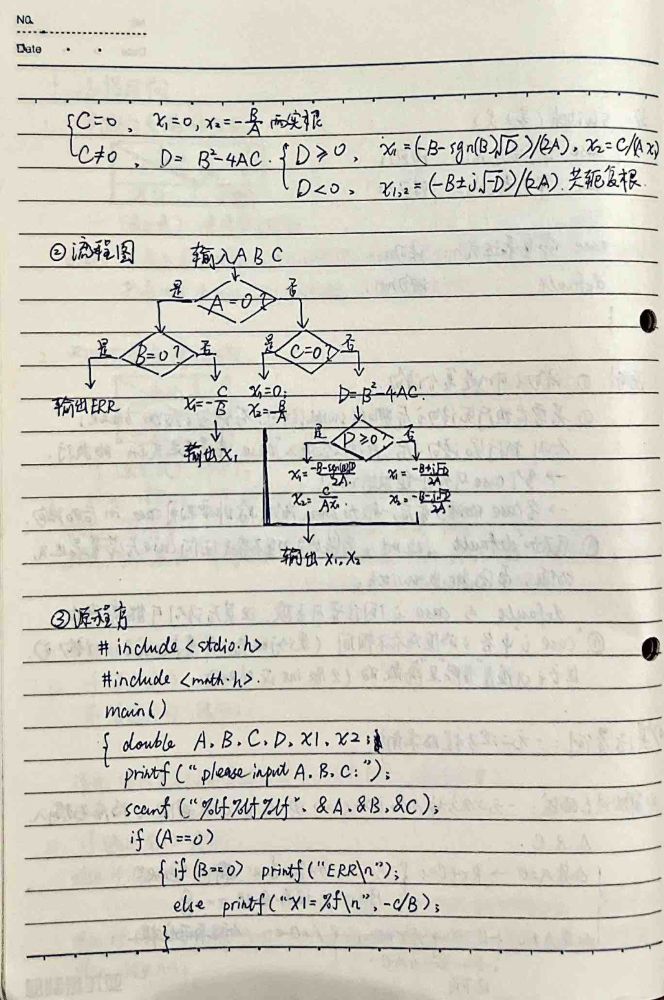
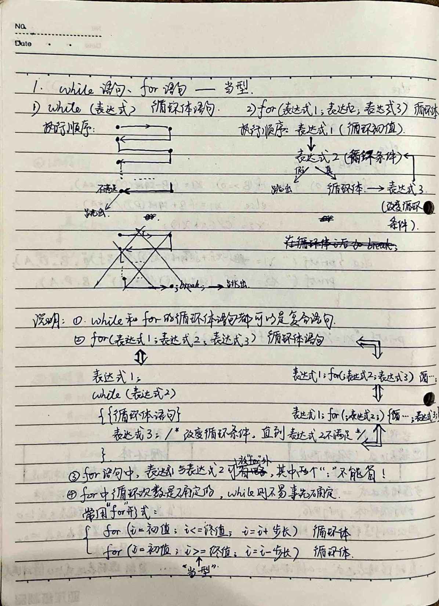
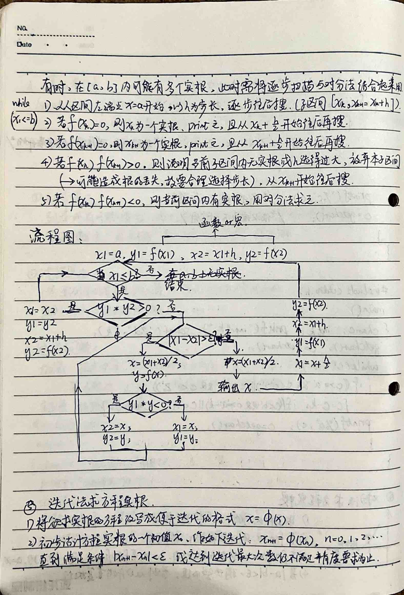
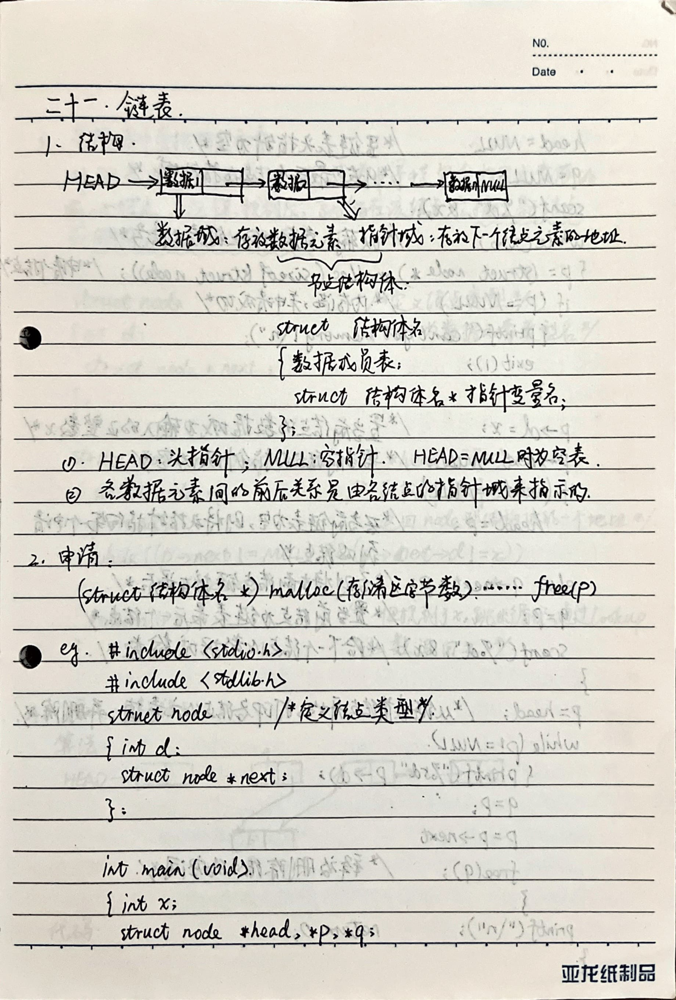

This notebook is designed for students studying C++ and C. It is intended for use in a specific subject and year. The notebook features a perforated page for easy removal and a hole punch for convenient binding.
Personal Information
Name: Liu Ming Address: Fendou Tel: Fendou Nationality: Fendou Constellation: Blood Type: Birth Date: I.D. Card: Company/School Name: Company/School Tel: Company/School Web: Company/School Fax: E-mail: QQ: MSN: Other:
Lightly and easily take notes - Efficiently utilize every inch of paper.
### Chapter: Binary, Octal, and Hexadecimal Number Systems
#### Section 1: Binary, Octal, and Hexadecimal Number Systems
1. **Binary to Decimal Conversion:** - Each digit is multiplied by \(2^i\), where \(i\) is the position of the digit. 2. **Decimal to Binary Conversion:** - **Integer Part:** Use the division-by-2 method (exact). - **Fractional Part:** Use the multiplication-by-2 method (fixed precision).
3. **Hexadecimal to Decimal Conversion:** - Each digit is multiplied by \(16^i\), where \(i\) is the position of the digit.
4. **Decimal to Hexadecimal Conversion:** - **Integer Part:** Use the division-by-16 method (exact). - **Fractional Part:** Use the multiplication-by-16 method (fixed precision).
5. **Hexadecimal, Octal, and Binary Conversion:** - Since \(16 = 2^4\) and \(8 = 2^3\), the conversion between these systems can be done by grouping digits in groups of four and three respectively. - For example, to convert from binary to hexadecimal, group the binary digits into sets of four and convert each set to its corresponding hexadecimal digit. - For example, to convert from hexadecimal to binary, convert each hexadecimal digit to its four-bit binary equivalent.
This chapter covers the fundamental concepts of binary, octal, and hexadecimal number systems, their conversions, and their applications in digital electronics.
### Chapter: Binary Arithmetic and Logical Operations
#### Section 1: Binary Arithmetic Operations 1. **Addition**: - $0 + 0 = 0$ - $0 + 1 = 1$ - $1 + 1 = 10$ (Carry 1 to the next higher bit)
2. **Subtraction**: - $0 - 0 = 0$ - $1 - 1 = 0$ - $1 - 0 = 1$ - $0 - 1 = 1$ (Borrow 1 from the next higher bit)
3. **Multiplication**: - $0 \times 0 = 0$ - $0 \times 1 = 0$ - $1 \times 0 = 0$ - $1 \times 1 = 1$
4. **Division**: - Can be performed using long division, utilizing multiplication and subtraction operations.
5. **Logical OR (Logical Addition)**: - $0 \vee 0 = 0$ - $0 \vee 1 = 1$ - $1 \vee 0 = 1$ - $1 \vee 1 = 1$
6. **Logical AND (Logical Multiplication)**: - $1 \wedge 1 = 1$ - $0 \wedge 1 = 0$ - $1 \wedge 0 = 0$ - $0 \wedge 0 = 0$
7. **Logical NOT (Logical Negation)**: - $\overline{1} = 0$ - $\overline{0} = 1$
8. **Logical XOR (Exclusive OR)**: - $0 \oplus 0 = 0$ - $0 \oplus 1 = 1$ - $1 \oplus 0 = 1$ - $1 \oplus 1 = 0$
#### Section 2: Number Representation in Computers - Fixed Point and Floating Point
1. **Fixed Point Representation**: - **Integer**: Fixed-point integer - The highest bit is the sign bit, 0 for positive. - **Fractional**: Fixed-point fractional - Generally has 8 k bits, k ∈ Z = k bytes = 2 k十六进制位. - Due to the fixed-point fractional representation, it is assumed that the sign bit is in the sign position. The fixed-point integer and fractional representation in binary fixed-point numbers are the same. At this time, it should be determined whether it is a fixed-point integer. - **Sign-Magnitude Representation**: - The sign bit + number. Not suitable for arithmetic operations (same as unsigned). - Using n binary bits to store the original code, it can represent ±(2^n - 1) integers within the range of 1 to n.
2. **Two's Complement Representation**: - The two's complement of a positive number is the same as the original code. - The two's complement of a negative number is the original code except for the sign bit. The two's complement is used in the range of signed numbers.
### Chapter: Binary Number Systems and Floating-Point Representation
#### 1. Binary Number Systems
- **1.1. Positive Numbers in Binary:** - The **complement** of a positive number in binary is equal to its **two's complement**. - The **two's complement** of a positive number is equal to its **one's complement**. - The **one's complement** of a positive number is equal to its **original code**.
- **1.2. Negative Numbers in Binary:** - The **two's complement** of a negative number is equal to its **one's complement** followed by adding 1. - Using \( n \) binary bits to store a number, it can represent \( + (2^0 + \ldots + 2^{n-1}) = +2^{n-1} - 1 \). - And \( - (2^0 + 2^1 + 2^2 + \ldots + 2^{n-1}) - 1 = -2^{n-1} \) within the range of numbers. - In a computer, all addition and subtraction operations are converted into addition operations using the two's complement, with the sign bit participating in the operation. - The result of the calculation is in two's complement, which can be converted back to the original code.
- **1.3. Binary Coded Decimal (BCD):** - The **two's complement** of the sign bit is taken as the sign bit. - Using \( n \) binary bits to store a number, it can represent the integer range \( -2^{n-1} \sim 2^{n-1} - 1 \). - The result of the addition and subtraction operations is in the form of two's complement.
#### 2. Floating-Point Representation
- **2.1. Binary Numbers:** - A binary number \( P = S \times 2^N \), where \( S \) is the fixed-point fraction and \( N \) is the fixed-point integer. - The **tail** \( S \) (fixed-point fraction in original or two's complement) and the **exponent** \( N \) (fixed-point integer in two's complement or biased code). - The highest bit of the binary number is the sign bit.
- **2.2. Floating-Point Number Representation:** - The floating-point number is represented as \( P = S \times 2^N \), where \( S \) is the fraction and \( N \) is the exponent. - The tail \( S \) (fixed-point fraction in original or two's complement) and the exponent \( N \) (fixed-point integer in two's complement or biased code). - The highest bit of the binary number is the sign bit.
### Chapter: Basic Data Types and Constants
#### 1. Integer Constants
- **Integer Constants**: These are values that do not change during the execution of the program. They can be represented in various forms, including binary, decimal, and hexadecimal. - **Binary Representation**: In binary, integers can be represented as either signed or unsigned. Signed integers can be represented in two's complement form, which allows for both positive and negative values. The range of signed integers is from $-2^{n-1}$ to $2^{n-1}-1$, where $n$ is the number of bits. - **Decimal Representation**: Decimal integers can be represented as either signed or unsigned. Signed integers can be represented in two's complement form, which allows for both positive and negative values. The range of signed integers is from $-2^{n-1}$ to $2^{n-1}-1$, where $n$ is the number of bits. - **Hexadecimal Representation**: Hexadecimal integers can be represented as either signed or unsigned. Signed integers can be represented in two's complement form, which allows for both positive and negative values. The range of signed integers is from $-2^{n-1}$ to $2^{n-1}-1$, where $n$ is the number of bits. - **Input to Computer**: When entering integers into the computer, they can be represented in decimal, binary, or hexadecimal forms. For example, the decimal number 10 can be represented as 10 in decimal, 1010 in binary, or A in hexadecimal. - **Long Integer Constants**: These are integers that can be represented in decimal, binary, or hexadecimal forms. They can be represented as either signed or unsigned. Signed integers can be represented in two's complement form, which allows for both positive and negative values. The range of signed integers is from $-2^{n-1}$ to $2^{n-1}-1$, where $n$ is the number of bits. - **Floating Point Constants**: These are real numbers that can be represented in decimal, binary, or hexadecimal forms. They can be represented as either signed or unsigned. Signed integers can be represented in two's complement form, which allows for both positive and negative values. The range of signed integers is from $-2^{n-1}$ to $2^{n-1}-1$, where $n$ is the number of bits. - **Scientific Notation**: Scientific notation is a way of representing real numbers in a compact form. It is written as $A \times 10^N$, where $A$ is a number between 1 and 10, and $N$ is an integer. For example, the number 1234 can be written as $1.234 \times 10^3$ in scientific notation.
### Example: Decimal Real Number 97.6875
$$(97.6875)_{10} = (1100001.1011)_{2}$$ $$= (0.11000011011)_{2} \times 2^{7}$$
| 63 62 | 52 51 | 0 | | --- | --- | --- | | 1 | 1 | 0 |
**Note:** 1. The sign bit of the mantissa is in the first bit of the 64 bits (bit 63). 2. The original code of the mantissa after removing the sign bit is always "1" (any number can be normalized), so we can remove this bit and add it back during calculation. 3. The exponent is converted to binary and then subtracted by 10 (i.e., 10 in base 2), so the 11 bits are then converted to a biased code. 4. A real constant can be accurately represented to 13 decimal places (excluding the first digit), but there is still a rounding error.
### 3. Character Constants
- A single character enclosed in single quotes (e.g., 'a', '*', '\n', '\x') - Examples: - '6' is an integer constant, occupying 2 bytes, represented in the computer as (110)2 = 0000 0000 0000 0110. - '6L' is a long integer constant, occupying 4 bytes, represented in the computer as (0000 0000 0000 0110)2. - '0.6e1' is a real constant, occupying 8 bytes, represented in the computer as (0011 0110 0000 0000 0000 0000 0000 0000)2. The ASCII code value of '6' is 54, which in binary is (0111 0110)2.
### C Language Data Types: Integer, Real, Character, Enumerated, Structured, Pointer
#### Basic Data Types
**5. Basic Data Types Variables**
**Variable:** A variable is a value that can change during the execution of a program and corresponds to a specific memory location in the computer.
- Different variables occupy different numbers of bytes. When declaring a variable, specify the data type (variable name) to allow the system to allocate the appropriate number of bytes. (Different compilers may allocate different numbers of bytes for the same type of variable.)
- Variable Name: Starts with a letter (case-sensitive) or an underscore, followed by letters, digits, and underscores. In general, the number of characters in the variable name should not exceed 8; otherwise, it will not be recognized.
---
**1. Integer Variables**
- Short Integer 2B: `short` or `short int` (signed) has a range of `-2^15 ~ 2^15 - 1` (with sign). - `unsigned short` or `unsigned short int` (unsigned) has a range of `0 ~ 2^16 - 1` - Basic Integer 2B: `int` (signed) has a range of `-2^15 ~ 2^15 - 1` - `unsigned int` or `unsigned` (unsigned) has a range of `0 ~ 2^16 - 1` - Long Integer 4B: `long` or `long int` (signed) has a range of `-2^31 ~ 2^31 - 1` - `unsigned long` or `unsigned long int` (unsigned) has a range of `0 ~ 2^32 - 1`
**Note:** 1. A type declaration statement can define multiple variables, with variables separated by commas. 2. Variables can be initialized (assigned a value) when declared. The value can be changed later in the program. 3. For integer variables, if no input data is entered, the value is considered as a binary code. 4. If the highest bit is filled with a number, it is considered as a binary code!
---
This concludes the section on basic data types in C programming.
2. Real Variables - Single Precision: 6-7 significant digits - Double Precision: 15-16 significant digits - float: 4B - double: 8B
3. Character Variables - char: 1B ~ ASCII code ~ integer constant (8 bits: 1B) - %c: Output character data format specifier - %d: Output basic integer data format specifier - In C, character data (ASCII code) and integer (0~255) cannot be used interchangeably. - (0~126) ↔ (0~255) → (0~126)
6. Data Input and Output - Input/Output Devices: Keyboard/Display - Input/Output Data Formats: Integer, Real, Character - Input/Output Specific Content - Using the "stdio.h" library for input/output - printf("%格式...", 内容) → Format Output - scanf("%格式...", &地址) → Format Input - putchar(...) → Character Output - getchar(...) → Character Input
1. Format Output Functions - 2B: %lu - 4B: %lu - Decimal: %d (basic), %ld (long), %lu (unsigned basic), %lu (unsigned long) - Octal: %o (basic), %lo (long), %uo (unsigned basic), %ulo (unsigned long) - Hexadecimal: %x (basic), %lx (long), %ux (unsigned basic), %ulu (unsigned long) - After the percent sign, you can add + (right alignment), - (left alignment), m (total width).
### Chapter: Data Formatting and Output Functions
#### 1. Real Type Format Specifiers - **8B (double precision)**: - Real type format specifier: `%f` or `%e` - Exponential format: `%e` - The system guarantees a minimum width of 8 characters. - `%` followed by `m.n` where `m` represents the total width (including the decimal point and digits after it), and `n` represents the number of digits after the decimal point (default is 6 digits, rounded if necessary).
#### 2. Character Type Format Specifiers - **1B**: - `%c`
#### Notes: 1. Except for `%`, `d`, `f`, `c`, `s` (string), and `l` (long), all other double-quoted characters are output as they are. 2. First, calculate the value of each item (constant, variable, expression) and store it in the output buffer according to the specified format. If no format specifier is given, the original character is output. 3. When storing data in memory, integers (two's complement), real numbers (IEEE floating-point), and characters (ASCII) are stored in the memory space. The low-order byte of the data is stored at the end of the memory space, and the high-order byte is stored at the beginning. 4. When converting `long` to `int`, only the first two bytes are taken from the memory space (from right to left). The order is reversed in the two's complement form.
#### 2. Format Input Functions 1. Integer: The input and output are the same. 2. Real: - Single precision 4B: `%f` or `%e` - Double precision 8B: `%lf`
3) Character Type: `%c`, `%mc`.
**Note:** 1. The items in the address table are variable addresses, separated by commas. 2. The format specifier does not contain other characters. When inputting data, use a space or a tab to separate the data. 3. A character variable can only store one character. The first character is assigned to `char` (or `%mc`). 4. Do not use `m` or `n` to specify the width after the decimal point.
5. When a C program starts executing, the system allocates an input buffer in memory to store data entered from the keyboard. When a `scanf()` function is executed, it checks if there is data in the input buffer. - If there is data (remaining unread data from the last `scanf()`), it will be read according to the format specifier and converted to ASCII code, then stored in the corresponding address in the memory address table (from high to low). - If there is no data (input buffer is empty), the user will input data from the keyboard and press the return key or enter key. The data will be read according to the format specifier and stored in the input buffer. - If data is read from the input buffer, pressing the return key or enter key will clear the input buffer. - Therefore, in the `scanf()` function's "format control" parameter, do not add the newline character `\n`!
3. Character Output Function: - Outputs the character `c` at the current cursor position. ```c putchar(c); ``` - `c` can be a character constant, character variable, integer variable, integer expression, or character constant (must be prefixed with a single quote).
4. Character Input Function: - Receives a character input from the keyboard. ```c char x; x = getchar(); ``` - `char x;` `scanf("%c", &x);` - `char x;` `scanf("%c", &x);` - `char x;` `scanf("%c", &x);` - `char x;` `scanf("%c", &x);` - `char x;` `scanf("%c", &x);` - `char x;` `scanf("%c", &x);` - `char x;` `scanf("%c", &x);` - `char x;` `scanf("%c", &x);` - `char x;` `scanf("%c", &x);` - `char x;` `scanf("%c", &x);` - `char x;` `scanf("%c", &x);` - `char x;` `scanf("%c", &x);` - `char x;` `scanf("%c", &x);` - `char x;` `scanf("%c", &x);` - `char x;` `scanf("%c", &x);` - `char x;` `scanf("%c", &x);` - `char x;` `scanf("%c", &x);` - `char x;` `scanf("%c", &x);` - `char x;` `scanf("%c", &x);` - `char x;` `scanf("%c", &x);` - `char x;` `scanf("%c", &x);` - `char x;` `scanf("%c", &x);` - `char x;` `scanf("%c", &x);` - `char x;` `scanf("%c", &x);` - `char x;` `scanf("%c", &x);` - `char x;` `scanf("%c", &x);` - `char x;` `scanf("%c", &x);` - `char x;` `scanf("%c", &x);` - `char x;` `scanf("%c", &x);` - `char x;` `scanf("%c", &x);` - `char x;` `scanf("%c", &x);` - `char x;` `scanf("%c", &x);` - `char x;` `scanf("%c", &x);` - `char x;` `scanf("%c", &x);` - `char x;` `scanf("%c", &x);` - `char x;` `scanf("%c", &x);` - `char x;` `scanf("%c", &x);` - `char x;` `scanf("%c", &x);` - `char x;` `scanf("%c", &x);` - `char x;` `scanf("%c", &x);` - `char x;` `scanf("%c", &x);` - `char x;` `scanf("%c", &x);` - `char x;` `scanf("%c", &x);` - `char x;` `scanf("%c", &x);` - `char x;` `scanf("%c", &x);` - `char x;` `scanf("%c", &x);` - `char x;` `scanf("%c", &x);` - `char x;` `scanf("%c", &x);` - `char x;` `scanf("%c", &x);` - `char x;` `scanf("%c", &x);` - `char x;` `scanf("%c", &x);` - `char x;` `scanf("%c", &x);` - `char x;` `scanf("%c", &x);` - `char x;` `scanf("%c", &x);` - `char x;` `scanf("%c", &x);` - `char x;` `scanf("%c", &x);` - `char x;` `scanf("%c", &x);` - `char x;` `scanf("%c", &x);` - `char x;` `scanf("%c", &x);` - `char x;` `scanf("%c", &x);` - `char x;` `scanf("%c", &x);` - `char x;` `scanf("%c", &x);` - `char x;` `scanf("%c", &x);` - `char x;` `scanf("%c", &x);` - `char x;` `scanf("%c", &x);` - `char x;` `scanf("%c", &x);` - `char x;` `scanf("%c", &x);` - `char x;` `scanf("%c", &x);` - `char x;` `scanf("%c", &x);` - `
### Chapter: Expressions and Operators
#### 1. Assignment Operators ("=") - **Syntax**: `variable = expression` - **Function**: Assigns the value of the expression on the right to the variable on the left. - **Note**: If the types of the operands are different, the system automatically converts the types. - **Example**: `x = x / 2` is equivalent to `x /= 2`.
#### 2. Arithmetic Operators - **Addition**: `+` (double: addition; single: increment) - **Subtraction**: `-` (double: subtraction; single: decrement) - **Multiplication**: `*` - **Division**: `/` (double: division; integer division truncates the result) - **Modulo**: `%` (double: modulo, only used for integer division) - **Arithmetic Expressions**: Expressions that use arithmetic operators to connect operands. - **Note**: When different data types are mixed in arithmetic operations, the system automatically converts types during the operation. - **Type Conversion Order**: `char` (ASCII value operation) → `short` → `int` → `unsigned` → `long` → `double` (C language type conversion rules).
#### 3. Relational Operators - `<` (less than) - `<=` (less than or equal to) - `>` (greater than) - `>=` (greater than or equal to) - `==` (equal to) - `!=` (not equal to)
### Chapter: Logical Operations and Expressions
#### 4. Logical Operations Logical operations involve operations on boolean values (true and false). In programming, true is represented as non-zero and false as zero. The operations include AND (&&), OR (||), and NOT (!).
- **AND (&&)**: Returns true if both operands are true. - `false && false = false` - `false && true = false` - `true && false = false` - `true && true = true`
- **OR (||)**: Returns true if at least one of the operands is true. - `false || false = false` - `false || true = true` - `true || false = true` - `true || true = true`
- **NOT (!)**: Returns the opposite of the operand. - `!false = true` - `!true = false`
#### 5. Increment and Decrement Operations Increment and decrement operations modify the value of a variable. The increment operator `++` and decrement operator `--` can be used in two ways: pre-increment/post-increment and pre-decrement/post-decrement.
- **Pre-increment**: The variable is incremented before the expression is evaluated. - `x = ++n` is equivalent to `n = n + 1; x = n;`
- **Post-increment**: The variable is incremented after the expression is evaluated. - `x = n++` is equivalent to `x = n; n = n + 1;`
#### 6. Sizeof Operation The `sizeof` operator calculates the size of a type in bytes. It can be used in expressions and with type names.
- **Example**:
```c
#include
This chapter covers logical operations, increment and decrement operations, and the `sizeof` operator, providing a comprehensive understanding of these fundamental concepts in programming.
7. Comma Operator (Sequential Evaluation Operator)
Function: The comma serves as a separator and a sequential evaluation operator.
- As a separator: e.g., in a variable declaration statement, multiple variables can be defined in one statement, separated by commas. - As a sequential operator: expressions 1, expressions 2, ..., expressions n. From left to right, evaluate each expression, and the value of the last expression is the result of the comma expression. Note: The comma is the lowest precedence operator (last evaluation).
Example:
```c
#include
8. Conditional Operator (Ternary Operator or Ternary Operator)
Expression1 ? Expression2 : Expression3.
Function: If Expression1 is non-zero (true), take the value of Expression2; if zero (false), take the value of Expression3. Note: 1) Operator precedence: unary > binary > ternary > ... 2) The conditional operator has a right-to-left associativity (assignment operator is also right-to-left). Example: ```c a > b ? a : (c > d ? c : d) ``` $$ a > b ? a : (c > d ? c : d) $$
### Chapter Eight: Preprocessing
#### 1. Macro Definition
**1.1 Symbolic Constants**
Function: To reduce the amount of repeated writing of certain characters in the program, define these characters as symbolic constants. ``` #define symbol_name string ``` (usually uppercase) (no semicolon at the end, each line is a separate statement) The scope of the definition is until the `#undef symbol_name` is encountered.
Example: ```c #define PI 3.14159 main() { ... } #undef PI ```
**1.2 Macro Definitions with Parameters**
Function: `#define macro_name (parameter list) string (with parameters)` Explanation: To ensure that the calculation does not result in errors due to the order of operations. ``` { parameters in the string are enclosed in parentheses } { the entire string is enclosed in parentheses } ```
#### 2. File Include Command
Function: To include another source file in a source file.
```
#include
### Conditional Compilation Commands
#### Function: - **Function**: Conditional compilation commands allow parts of the source code to be compiled only when certain conditions are met. This can be used to conditionally include or exclude code segments based on specific conditions. The goal is to produce different object files (.obj) from the same source code under different compilation conditions.
#### Syntax: 1. **`#ifdef`**: - **Syntax**: ```c #ifdef identifier program segment 1 (no braces) #else program segment 2 (no braces) #endif ``` - **Explanation**: If the identifier is defined, the code in `program segment 1` is compiled; otherwise, `program segment 2` is compiled. 2. **`#ifndef`**: - **Syntax**: ```c #ifndef identifier program segment 1 (no braces) #else program segment 2 (no braces) #endif ``` - **Explanation**: If the identifier is not defined, the code in `program segment 1` is compiled; otherwise, `program segment 2` is compiled. This is the opposite of `#ifdef`.
3. **`#if`**: - **Syntax**: ```c #if constant expression program segment 1 (no braces) #else program segment 2 (no braces) #endif ``` - **Explanation**: If the constant expression evaluates to a non-zero value, `program segment 1` is compiled; otherwise, `program segment 2` is compiled. Any constant expression can be used, including `(non-zero)`.
### Conclusion: The conditional compilation commands allow developers to include or exclude code segments based on specific conditions, which can be very useful for different compilation scenarios.
### Chapter 9: Sequential Structure
#### 1. Statements
1. **Expression Statements**: Statements that evaluate expressions. Examples: - $y = x * x + 3;$ - `c = getchar();` - `printf("%d, %d\n", a, c > d ? c : d);`
2. **Empty Statements**: Statements that contain only a semicolon.
3. **Control Statements**: Statements that control the flow of execution. Examples: - `break;` - `continue;`
4. **Function Return Statements**: Statements that return values from functions. Example: - `return;`
#### 2. Compound Statements
A compound statement is a block of statements enclosed in braces `{}`. It can include: - Variable type declarations. - A series of statements.
**Explanation**: 1. A compound statement is syntactically equivalent to a single statement. 2. A compound statement can be nested within another compound statement. 3. The statements within a compound statement are only valid within the scope of the compound statement. If a variable is declared within a compound statement, its scope is limited to that statement and any nested statements. If a variable is not declared within a compound statement, its value can be accessed from the outer scope. The variable can be treated as a local variable within the compound statement.
$\Rightarrow$ Treat the inner compound statement as a local statement within the outer compound statement.
### Chapter Ten: Selection Structures
#### 1. Single-branch Selection Structure
$$ \begin{array}{|c|c|} \hline \text{Expression} & \text{Statement} \\ \hline \text{if (Expression) Statement;} \\ \text{if (Expression) Statement;} \\ \text{if (Expression) Statement;} \\ \text{if (Expression) Statement;} \\ \text{if (Expression) Statement;} \\ \text{if (Expression) Statement;} \\ \text{if (Expression) Statement;} \\ \text{if (Expression) Statement;} \\ \text{if (Expression) Statement;} \\ \text{if (Expression) Statement;} \\ \text{if (Expression) Statement;} \\ \text{if (Expression) Statement;} \\ \text{if (Expression) Statement;} \\ \text{if (Expression) Statement;} \\ \text{if (Expression) Statement;} \\ \text{if (Expression) Statement;} \\ \text{if (Expression) Statement;} \\ \text{if (Expression) Statement;} \\ \text{if (Expression) Statement;} \\ \text{if (Expression) Statement;} \\ \text{if (Expression) Statement;} \\ \text{if (Expression) Statement;} \\ \text{if (Expression) Statement;} \\ \text{if (Expression) Statement;} \\ \text{if (Expression) Statement;} \\ \text{if (Expression) Statement;} \\ \text{if (Expression) Statement;} \\ \text{if (Expression) Statement;} \\ \text{if (Expression) Statement;} \\ \text{if (Expression) Statement;} \\ \text{if (Expression) Statement;} \\ \text{if (Expression) Statement;} \\ \text{if (Expression) Statement;} \\ \text{if (Expression) Statement;} \\ \text{if (Expression) Statement;} \\ \text{if (Expression) Statement;} \\ \text{if (Expression) Statement;} \\ \text{if (Expression) Statement;} \\ \text{if (Expression) Statement;} \\ \text{if (Expression) Statement;} \\ \text{if (Expression) Statement;} \\ \text{if (Expression) Statement;} \\ \text{if (Expression) Statement;} \\ \text{if (Expression) Statement;} \\ \text{if (Expression) Statement;} \\ \text{if (Expression) Statement;} \\ \text{if (Expression) Statement;} \\ \text{if (Expression) Statement;} \\ \text{if (Expression) Statement;} \\ \text{if (Expression) Statement;} \\ \text{if (Expression) Statement;} \\ \text{if (Expression) Statement;} \\ \text{if (Expression) Statement;} \\ \text{if (Expression) Statement;} \\ \text{if (Expression) Statement;} \\ \text{if (Expression) Statement;} \\ \text{if (Expression) Statement;} \\ \text{if (Expression) Statement;} \\ \text{if (Expression) Statement;} \\ \text{if (Expression) Statement;} \\ \text{if (Expression) Statement;} \\ \text{if (Expression) Statement;} \\ \text{if (Expression) Statement;} \\ \text{if (Expression) Statement;} \\ \text{if (Expression) Statement;} \\ \text{if (Expression) Statement;} \\ \text{if (Expression) Statement;} \\ \text{if (Expression) Statement;} \\ \text{if (Expression) Statement;} \\ \text{if (Expression) Statement;} \\ \text{if (Expression) Statement;} \\ \text{if (Expression) Statement;} \\ \text{if (Expression) Statement;} \\ \text{if (Expression) Statement;} \\ \text{if (Expression) Statement;} \\ \text{if (Expression) Statement;} \\ \text{if (Expression) Statement;} \\ \text{if (Expression) Statement;} \\ \text{if (Expression) Statement;} \\ \text{if (Expression) Statement;} \\ \text{if (Expression) Statement;} \\ \text{if (Expression) Statement;} \\ \text{if (Expression) Statement;} \\ \text{if (Expression) Statement;} \\ \text{if (Expression) Statement;} \\ \text{if (Expression) Statement;} \\ \text{if (Expression) Statement;} \\ \text{if (Expression) Statement;} \\ \text{if (Expression) Statement;} \\ \text{if (Expression) Statement;} \\ \text{if (Expression) Statement;} \\ \text{if (Expression) Statement;} \\ \text{if (Expression) Statement;} \\ \text{if (Expression) Statement;} \\ \text{if (Expression) Statement;} \\ \text{if (Expression) Statement;} \\ \text{if (Expression) Statement;} \\ \text{if (Expression) Statement;} \\ \text{if (Expression) Statement;} \\ \text{if (Expression) Statement;} \\ \text{if (Expression) Statement;} \\ \text{if (Expression) Statement;} \\ \text{if (Expression) Statement;} \\ \text{if (Expression) Statement;} \\ \text{if (Expression) Statement;} \\ \text{if (Expression) Statement;} \\ \text{if (Expression) Statement;} \\ \text{if (Expression) Statement;} \\ \text{if (Expression) Statement;} \\ \text{if (Expression) Statement;} \\ \text{if (Expression) Statement;} \\ \text{if (Expression) Statement;} \\ \text{if (Expression) Statement;} \\ \text{if (Expression) Statement;} \\ \text{if (Expression) Statement;} \\ \text{if (Expression) Statement;} \\ \text{if (Expression) Statement;} \\ \text{if (Expression) Statement;} \\ \text{if (Expression) Statement;} \\ \text{if (Expression) Statement;} \\ \text{if (Expression) Statement;} \\ \text{if (Expression) Statement;} \\ \text{if (Expression) Statement;} \\ \text{if (Expression) Statement;} \\ \text{if (Expression) Statement;} \\ \text{if (Expression) Statement;} \\ \text{if (Expression) Statement;} \\ \text{if (Expression) Statement;} \\ \text{if (Expression) Statement;} \\ \text{if (Expression) Statement;} \\ \text{if (Expression) Statement;} \\ \text{if (Expression) Statement;} \\ \text{if (Expression) Statement;} \\ \text{if (Expression) Statement;} \\ \text{if (Expression) Statement;} \\ \text{if (Expression) Statement;} \\ \text{if (Expression) Statement;} \\ \text{if (Expression) Statement;} \\ \text{if (Expression) Statement;} \\ \text{if (Expression) Statement;} \\ \text{if (Expression) Statement;} \\ \text{if (Expression) Statement;} \\ \text{if (Expression) Statement;} \\ \text{if (Expression) Statement;} \\ \text{if (Expression) Statement;} \\ \
### Chapter: Switch Statement and Quadratic Equation Solving
#### 3) Switch Statement ```c switch (expression) { case constant_expression1: statement1; case constant_expression2: statement2; ... case constant_expression_n: statement_n; default: statement_n+1; } ``` **Explanation:** 1. Statements can be complex. 2. To exit the switch structure after executing a statement, add `break` after the statement. Otherwise, the system will continue executing the next `case` statement. 3. Multiple `case` statements can share a group of statements. 4. Each `case` statement can be followed by a `break` statement, except for the last `case` statement in a group. 5. If `default` is not included, and the expression does not match any `case` statement, the `switch` will exit. 6. `default` and `case` statements can be interchanged, but the subsequent statements may need adjustment. 7. Each `case` statement must have unique values (e.g., `case i:`, where `i` is a constant expression). 8. Each value must be finite and non-repetitive (only `int` or `char`).
#### 4) Algorithm Example: Solving Quadratic Equations 1. **Natural Language Description:** - Solve the quadratic equation \( Ax^2 + Bx + C = 0 \) given \( A, B, C \). First, input \( A, B, C \). - If \( A = 0 \), then \( Bx + C = 0 \). If \( B = 0 \), the equation has no solution, output "ERR". - If \( A \neq 0 \) and \( B \neq 0 \), the equation has a real root \( x = -\frac{C}{B} \). - If \( A \neq 0 \) and \( B = 0 \), the equation is \( Ax^2 + C = 0 \). If \( A \times C < 0 \), the equation has two real roots. ```c if (A == 0) { if (B == 0) { printf("ERR"); } else { x = -C / B; printf("x = %f", x); } } else { if (B == 0) { if (A * C < 0) { x1 = -sqrt(-C / A); x2 = sqrt(-C / A); printf("x1 = %f, x2 = %f", x1, x2); } else { printf("ERR"); } } else { x1 = (-B + sqrt(B * B - 4 * A * C)) / (2 * A); x2 = (-B - sqrt(B * B - 4 * A * C)) / (2 * A); printf("x1 = %f, x2 = %f", x1, x2); } }
### Chapter: Quadratic Equation Solver
#### 1. Mathematical Formulas and Equations
The quadratic equation is given by: $$ Ax^2 + Bx + C = 0 $$
- If \(C = 0\), the equation simplifies to: $$ x_1 = 0, \quad x_2 = -\frac{B}{A} $$ These roots are real and distinct.
- If \(C \neq 0\), the discriminant \(D\) is calculated as: $$ D = B^2 - 4AC $$ - If \(D \geq 0\), the roots are: $$ x_1 = \frac{-B - \sqrt{D}}{2A}, \quad x_2 = \frac{C}{Ax_1} $$ These roots are real and distinct. - If \(D < 0\), the roots are: $$ x_{1,2} = \frac{-B \pm \sqrt{-D}}{2A} $$ These roots are complex conjugates.
#### 2. Flowchart
The flowchart for solving the quadratic equation is as follows:
1. Input \(A\), \(B\), and \(C\). 2. Check if \(A = 0\): - If \(A = 0\), output "ERR". - If \(A \neq 0\), proceed to the next step. 3. Check if \(B = 0\): - If \(B = 0\), output "ERR". - If \(B \neq 0\), proceed to the next step. 4. Check if \(C = 0\): - If \(C = 0\), output \(x_1 = 0\). - If \(C \neq 0\), calculate the discriminant \(D = B^2 - 4AC\). 5. Check if \(D \geq 0\): - If \(D \geq 0\), calculate the roots: $$ x_1 = \frac{-B - \sqrt{D}}{2A}, \quad x_2 = \frac{C}{Ax_1} $$ - If \(D < 0\), calculate the complex roots: $$ x_{1,2} = \frac{-B \pm \sqrt{-D}}{2A} $$ 6. Output the roots \(x_1\) and \(x_2\).
#### 3. Source Code
```c
#include
int main() { double A, B, C, D, x1, x2; printf("Please input A, B, C: "); scanf("%lf %lf %lf", &A, &B, &C); if (A == 0) { if (B == 0) printf("ERR\n"); else printf("x1 = %f\n", -C / B); } else { D = B * B - 4 * A * C; if (D >= 0) { x1 = (-B - sqrt(D)) / (2 * A); x2 = C / (A * x1); printf("x1 = %f\n", x1); printf("x2 = %f\n", x2); } else { x1 = (-B - sqrt(-D)) / (2 * A); x2 = (-B + sqrt(-D)) / (2 * A); printf("x1 = %f\n", x1); printf("x2 = %f\n", x2); } } return 0; } ```
This code implements the flowchart logic to solve the quadratic equation and output the roots.

### Chapter Eleven: Loop Structures
#### Conditional Loop - **While Loop** - **Logical Expression (Condition Satisfied)** - Loop Body - **While Logical Expression != 0** - Execute Loop Body - After Execution, return to Logical Expression (Condition Satisfied)
#### Until Loop - **Loop Body** - **Logical Expression (Until Condition Satisfied)** - **First execute Loop Body, then evaluate Logical Expression (Condition Satisfied)** - **Logical Expression != 0** - Continue executing Loop Body - **Logical Expression == 0 (Condition Satisfied)** - Exit Loop
### Example Code ```c else { if (C == 0) { x1 = 0; x2 = -B / A; } else { D = B * B - 4 * A * C; if (D >= 0) { if (B >= 0) x1 = (-B - sqrt(D)) / (2 * A); else x1 = (-B + sqrt(D)) / (2 * A); x2 = C / (A * x1); } else { printf("x1 = %f\n x2 = %f", B, D, A); printf("x2 = -%f - jsqrt(%f) / (2 * %f)", B, D, A); } } printf("x1 = %f\n x2 = %f", x1, x2); }
1. **While Statement and For Statement - Conditional Type**
- **1.1 While Statement** - **Syntax:** `while (expression) {loop body}` - **Execution Order:** - Check the condition in the while loop. - If the condition is true, execute the loop body. - If the condition is false, exit the loop. - **Break Statement:** Use `break;` to exit the loop prematurely. - **1.2 For Statement** - **Syntax:** `for (initialization; condition; increment/decrement) {loop body}` - **Execution Order:** - Initialize the loop variable. - Check the condition. - If the condition is true, execute the loop body. - Increment or decrement the loop variable. - If the condition is false, exit the loop. - **Break Statement:** Use `break;` to exit the loop prematurely. - **Note:** - The while and for loop bodies can be compound statements. - The for loop's loop body can be a compound statement. - The for loop's initialization and condition can be combined, but the increment/decrement must be separate. - The for loop's loop body can be a compound statement. - The while loop's loop body can be a compound statement. - The for loop's loop body can be a compound statement. - The for loop's loop body can be a compound statement. - The for loop's loop body can be a compound statement. - The for loop's loop body can be a compound statement. - The for loop's loop body can be a compound statement. - The for loop's loop body can be a compound statement. - The for loop's loop body can be a compound statement. - The for loop's loop body can be a compound statement. - The for loop's loop body can be a compound statement. - The for loop's loop body can be a compound statement. - The for loop's loop body can be a compound statement. - The for loop's loop body can be a compound statement. - The for loop's loop body can be a compound statement. - The for loop's loop body can be a compound statement. - The for loop's loop body can be a compound statement. - The for loop's loop body can be a compound statement. - The for loop's loop body can be a compound statement. - The for loop's loop body can be a compound statement. - The for loop's loop body can be a compound statement. - The for loop's loop body can be a compound statement. - The for loop's loop body can be a compound statement. - The for loop's loop body can be a compound statement. - The for loop's loop body can be a compound statement. - The for loop's loop body can be a compound statement. - The for loop's loop body can be a compound statement. - The for loop's loop body can be a compound statement. - The for loop's loop body can be a compound statement. - The for loop's loop body can be a compound statement. - The for loop's loop body can be a compound statement. - The for loop's loop body can be a compound statement. - The for loop's loop body can be a compound statement. - The for loop's loop body can be a compound statement. - The for loop's loop body can be a compound statement. - The for loop's loop body can be a compound statement. - The for loop's loop body can be a compound statement. - The for loop's loop body can be a compound statement. - The for loop's loop body can be a compound statement. - The for loop's loop body can be a compound statement. - The for loop's loop body can be a compound statement. - The for loop's loop body can be a compound statement. - The for loop's loop body can be a compound statement. - The for loop's loop body can be a compound statement. - The for loop's loop body can be a compound statement. - The for loop's loop body can be a compound statement. - The for loop's loop body can be a compound statement. - The for loop's loop body can be a compound statement. - The for loop's loop body can be a compound statement. - The for loop's loop body can be a compound statement. - The for loop's loop body can be a compound statement. - The for loop's loop body can be a compound statement. - The for loop's loop body can be a compound statement. - The for loop's loop body can be a compound statement. - The for loop's loop body can be a compound statement. - The for loop's loop body can be a compound statement. - The for loop's loop body can be a compound statement. - The for loop's loop body can be a compound statement. - The for loop's loop body can be a compound statement. - The for loop's loop body can be a compound statement. - The for loop's loop body can be a compound statement. - The for loop's loop body can be a compound statement. - The for loop's loop body can be a compound statement. - The for loop's loop body can be a compound statement. - The for loop's loop body can be a compound statement. - The for loop's loop body can be a compound statement. - The for loop's loop body can be a compound statement. - The for loop's loop body can be a compound statement. - The for loop's loop body can be a compound statement. - The for loop's loop body can be a compound statement. - The for loop's loop body can be a compound statement. - The for loop's loop body can be a compound statement. - The for loop's loop body can be a compound statement. - The for loop's loop body can be a compound statement. - The for loop's loop body can be a compound statement. - The for loop's loop body can be a compound statement. - The for loop's loop body can be a compound statement. - The for loop's loop body can be a compound statement. - The for loop's loop body can be a compound statement. - The for loop's loop body can be a compound statement. - The for loop's loop body can be a compound statement. - The for loop's loop body can be a compound statement. - The for loop's loop body can be a compound statement. - The for loop's loop body can be a compound statement. - The for loop's loop body can be a compound statement. - The for loop's loop body can be a compound statement. - The for loop's loop body can be a compound statement. - The for loop's loop body can be a compound statement. - The for loop's loop body can be a compound statement. -

2. `do-while` Statement - Special Until Type. - `do` Loop Body `while (expression);` - Execution Order: - `while (expression) != 0` - `while (expression) == 0` → Exit loop until condition is met.
**Note:** - The loop body may not execute at all (logical expression is zero). - `do-while` loop body executes at least once. - Clearly, the loop body in `while` and `do-while` must have a statement that changes the condition. - In `do {loop body;} while (expression);`, the `expression` must be followed by a semicolon `;`.
3. Nested Loops: Sequentially output all prime numbers between 3 and 100. **Algorithm:** ```for (n=3; n<100; n=n+2)``` - Use all integers from 2 to √N to test N. If none of them divide N, N is prime. If any of them divide N, N is composite. Pay attention to the arrangement of prime numbers.
**Program:**
```#include
### 4. Algorithm Examples
#### Break Statement: - **break statement**: Exits a switch structure (after a case statement). - **break statement**: Exits the current loop structure. (A conditional structure should be included in the loop to determine when to break.) - **continue statement**: Ends the current iteration of the loop but does not exit the loop structure. (Similarly, an if statement determining when to "continue" the loop is needed.)
#### 1. Listing Algorithm: - **Listing all possible cases. Use the given conditions in the problem to verify which ones are needed.** - **Commonly used to solve "whether there exists" or "how many possibilities" types of problems.**
#### 2. Trial-and-Error Algorithm: - If the list of things to be listed is unknown, start from the initial situation and gradually try until the given conditions are met.
#### 3. Cipher Problem:
- **Encryption**: Each English letter in the text is replaced with the letter nine positions after it. Non-English letters remain unchanged. If the letter is 'Z' or 'z', it wraps around to the beginning of the alphabet.
- **Decryption**: The reverse operation of encryption.
```c
#include
int main() { char c; int k; /* step size */ printf("input k: "); scanf("%d", &k); c = getchar(); /* read the input k character */ return 0; }
### Textbook Chapter: Numerical Methods
#### Encryption Algorithm
The following code snippet demonstrates a simple encryption algorithm using a Caesar cipher:
```c
#include
main() { char c; int k; printf("input k:"); scanf("%d", &k); getchar(); c = getchar(); while(c != '\n') { if((c >= 'a' && c <= 'z') || (c >= 'A' && c <= 'Z')) { c = c + k; if(c > 'z' || (c > 'Z' && c <= 'Z' + k)) { c = c - 26; } printf("%c", c); c = getchar(); } } } ```
#### Bisection Method for Finding Roots
The bisection method is a numerical method used to find the roots of a continuous function within a given interval. The steps are as follows:
1. Take the midpoint of the interval $[a, b]$ and assign it to $x$.
2. If $f(x) = 0$, then $x$ is the root. Output $x$.
3. If $f(a) \cdot f(x) < 0$, then the root lies in the interval $[a, x]$. Set $b = x$.
4. If $f(x) \cdot f(b) < 0$, then the root lies in the interval $[x, b]$. Set $a = x$.
5. Repeat the process until the interval is sufficiently small, i.e., $|a - b| < \epsilon$.
```c
#include
main() { double a, b, x, f_a, f_b, f_x, epsilon = 0.001; printf("Enter a and b: "); scanf("%lf %lf", &a, &b); f_a = f(a); f_b = f(b); x = (a + b) / 2; f_x = f(x); while((b - a) > epsilon) { if(f_a * f_x < 0) { b = x; f_b = f_b; } else { a = x; f_a = f_a; } x = (a + b) / 2; f_x = f(x); } printf("The root is approximately: %lf", x); } ```
#### Explanation of the Bisection Method
The bisection method is a reliable and straightforward approach to finding the roots of a continuous function within a given interval. The method repeatedly narrows down the interval by evaluating the function at the midpoint and adjusting the interval based on the sign of the function values at the endpoints. The process continues until the interval is sufficiently small, ensuring the root is accurately approximated.
### Chapter: Numerical Methods for Finding Roots
Sometimes, within the interval [a, b], there may be multiple real roots. In such cases, it is necessary to combine the bisection method with the step-by-step search method. The algorithm is as follows:
1. Start from the left endpoint of the interval, x = a, and use h as the step size. Search step by step backward (sub-intervals [x_k, x_{k+h}]). If x_k < b: - If f(x_k) = 0, then x_k is a root. Print it and start searching from x_{k+h} in the backward direction. - If f(x_{k+h}) = 0, then x_{k+h} is a root. Print it and start searching from x_{k+h} in the backward direction. - If f(x_k) * f(x_{k+h}) > 0, it indicates that there is no root in the previous sub-interval or the step size is too large, so discard this sub-interval. Start searching from x_{k+h} in the backward direction. - If f(x_k) * f(x_{k+h}) < 0, then there is a root in the current sub-interval. Use the bisection method to find it.
#### Flowchart: 1. Initialize x1 = a, y1 = f(x1), x2 = x1 + h, y2 = f(x2). 2. If x1 ≤ b, proceed to step 3; otherwise, output "No root in [a, b]" and end. 3. If x1 = x2 and y1 * y2 > 0, output "No root in [a, b]" and end. 4. If |x1 - x2| > ε, output x and end. 5. Calculate x = (x1 + x2) / 2 and y = f(x). 6. If y1 * y < 0, set x2 = x and y2 = y; otherwise, set x1 = x and y1 = y. 7. Repeat steps 3 to 6 until the condition |x_{n+1} - x_n| < ε is met or the maximum number of iterations is reached.
### Iterative Method for Finding Roots 1. Convert the equation to a form suitable for iteration: x = φ(x). 2. Choose an initial value x0 and perform the following iteration: x_{n+1} = φ(x_n), n = 0, 1, 2, ... until the condition |x_{n+1} - x_n| < ε is met or the maximum number of iterations is reached.

### Chapter Twelve: C Language Modules
#### Twelve. C Language Modules Using Functions
1. **Standard Functions**: Functions defined in the standard library such as `
#### Function Definition
- **Function Signature**: `function_name (parameters) { ... }` - **Function Body**: `return (return_value);`
#### Notes: 1. The `return` statement in a function can be written as `return (expression)` or simply `return expression`. The `return` statement returns the value of the expression to the calling function. The data type of the expression must match the function's return type. If the function does not return a value (void type), the `return` statement can be omitted. 2. **Formal Parameters**: Multiple parameters are separated by commas. 3. **Function Prototype**: The function prototype should include the return type and parameter types. For example, `int P(int n)` specifies that the function `P` returns an integer and takes an integer parameter `n`.
### Example Function
```c int P(int n) { int result = n * n; return result; } ```
#### Example Usage
```c int main() { int x = P(5); printf("The result is: %d\n", x); return 0; } ```
This example demonstrates how to define and use a function in C. The function `P` takes an integer `n` and returns its square. The `main` function calls `P` with the argument `5` and prints the result.
### Chapter: Function Invocation in C
#### 4. A C program has only one `main()`, but the number of functions can be arbitrary. When `main()` starts executing, it encounters functions and calls them (from .c files).
#### 5. A C program can have all functions placed in one file or in multiple files.
### 1. Function Invocation
#### Definition vs. Invocation: - **Definition**: `type identifier function_name (parameter1 type, parameter2 type ...);` - **Invocation**: `function_name (actual parameter list);`
#### Function Prototype: - `type identifier function_name (parameter1 type, parameter2 type ...);`
#### Purpose: - To inform the compiler about the function type, parameters, and return type. - To ensure the function type, parameters, and return type match those of the function being called.
#### Notes: - **Function Invocation** can appear in expressions: returning a function value. - It can also be a statement: returning a function value, performing a single operation. - **Void Type** is an example of a function that does not return a value.
#### Function Prototype: - The function prototype is used in the calling function to inform the compiler about the function type, parameters, and return type. - The compiler will check the function type, parameters, and return type against those of the function being called. - The function prototype is defined before the function is called. - If the function prototype is defined before the function, the compiler will check the function type, parameters, and return type against those of the function being called. - If the function prototype is not defined before the function, the compiler will check the function type, parameters, and return type against those of the function being called. - If the function prototype is not defined before the function, the compiler will check the function type, parameters, and return type against those of the function being called. - If the function prototype is not defined before the function, the compiler will check the function type, parameters, and return type against those of the function being called. - If the function prototype is not defined before the function, the compiler will check the function type, parameters, and return type against those of the function being called. - If the function prototype is not defined before the function, the compiler will check the function type, parameters, and return type against those of the function being called. - If the function prototype is not defined before the function, the compiler will check the function type, parameters, and return type against those of the function being called. - If the function prototype is not defined before the function, the compiler will check the function type, parameters, and return type against those of the function being called. - If the function prototype is not defined before the function, the compiler will check the function type, parameters, and return type against those of the function being called. - If the function prototype is not defined before the function, the compiler will check the function type, parameters, and return type against those of the function being called. - If the function prototype is not defined before the function, the compiler will check the function type, parameters, and return type against those of the function being called. - If the function prototype is not defined before the function, the compiler will check the function type, parameters, and return type against those of the function being called. - If the function prototype is not defined before the function, the compiler will check the function type, parameters, and return type against those of the function being called. - If the function prototype is not defined before the function, the compiler will check the function type, parameters, and return type against those of the function being called. - If the function prototype is not defined before the function, the compiler will check the function type, parameters, and return type against those of the function being called. - If the function prototype is not defined before the function, the compiler will check the function type, parameters, and return type against those of the function being called. - If the function prototype is not defined before the function, the compiler will check the function type, parameters, and return type against those of the function being called. - If the function prototype is not defined before the function, the compiler will check the function type, parameters, and return type against those of the function being called. - If the function prototype is not defined before the function, the compiler will check the function type, parameters, and return type against those of the function being called. - If the function prototype is not defined before the function, the compiler will check the function type, parameters, and return type against those of the function being called. - If the function prototype is not defined before the function, the compiler will check the function type, parameters, and return type against those of the function being called. - If the function prototype is not defined before the function, the compiler will check the function type, parameters, and return type against those of the function being called. - If the function prototype is not defined before the function, the compiler will check the function type, parameters, and return type against those of the function being called. - If the function prototype is not defined before the function, the compiler will check the function type, parameters, and return type against those of the function being called. - If the function prototype is not defined before the function, the compiler will check the function type, parameters, and return type against those of the function being called. - If the function prototype is not defined before the function, the compiler will check the function type, parameters, and return type against those of the function being called. - If the function prototype is not defined before the function, the compiler will check the function type, parameters, and return type against those of the function being called. - If the function prototype is not defined before the function, the compiler will check the function type, parameters, and return type against those of the function being called. - If the function prototype is not defined before the function, the compiler will check the function type, parameters, and return type against those of the function being called. - If the function prototype is not defined before the function, the compiler will check the function type, parameters, and return type against those of the function being called. - If the function prototype is not defined before the function, the compiler will check the function type, parameters, and return type against those of the function being called. - If the function prototype is not defined before the function, the compiler will check the function type, parameters, and return type against those of the function being called. - If the function prototype is not defined before the function, the compiler will check the function type, parameters, and return type against those of the function being called. - If the function prototype is not defined before the function, the compiler will check the function type, parameters, and return type against those of the function being called. - If the function prototype is not defined before the function, the compiler will check the function type, parameters, and return type against those of the function being called. - If the function prototype is not defined before the function, the compiler will check the function type, parameters, and return type against those of the function being called. - If the function prototype is not defined before the function, the compiler will check the function type,
nothing better than an example:
```c
#include
```c
#include
If the main() function is after the sushu() function in another file .c, in the void main() before should include it.
2. Formal Parameters (in the called function) and Actual Parameters (in the calling function) Combination Method:
**Calling Module:** - Actual Parameter $ \Longleftrightarrow $ Formal Parameter
**Address Combination:** When the "calling module" calls the "called module", - (Data bidirectional transmission) Actual parameters are not directly passed to the formal parameters in the called module, - Instead, the address of the actual parameter is passed to the formal parameter. The formal and actual parameter addresses are the same. - In the called module, the operation on the formal parameter (function part) is the same as the operation on the actual parameter. - Note: If the formal parameter in the called module changes, it will also change the actual parameter in the calling module. Therefore, under this address combination method, actual parameters can only be variables (with fixed memory addresses, not expressions).
**Value Combination:** When the "calling module" calls the "called module", - (Data unidirectional transmission) The actual parameter value is directly passed to the formal parameter and stored in the formal parameter address. - The formal and actual parameter addresses are different. In the called module, the operation on the formal parameter (function part) does not affect the actual parameter in the calling module. - Note: After the called module is executed and returns to the calling module, the new value of the formal parameter in the called module cannot be returned to the calling module, so the actual parameter is not affected by the formal parameter. It can be a variable or an expression.
In C language, when the formal parameter is a simple variable, it uses value combination! A function can only pass actual parameters to formal parameters through the function name. - Different functions can have the same formal parameter name, which does not affect each other. - Formal parameters are local variables, so when called, only the actual parameters can be passed to the formal parameters. - The formal parameter is a local variable, so when called, only the actual parameters can be passed to the formal parameters.
### Chapter: Variable Storage Types
#### 1. Global Variables Global variables are defined outside of any function and are accessible by all functions in the program. They can achieve address linkage functionality (bidirectional transmission). If a local variable has the same name as a global variable, the local variable will be used within its scope, and the global variable will be ignored.
#### 2. Variable Storage Types A user program's storage allocation in a computer:
| Storage Area | Description | |--------------|-------------| | Program Area | The program area is allocated at the start of the program and is fixed in memory (e.g., global variables). | | Static Storage Area | The static storage area is allocated at the start of the program and is fixed in memory (e.g., global variables). | | Dynamic Storage Area | The dynamic storage area is allocated during the execution of the program and is fixed in memory (e.g., function parameters). |
#### 3. Basic Attributes of Variables and Functions - Data Types: Integer, Real, Character. - Storage Types: Automatic (auto), Static (static), Register (register), External (extern).
1. Without storage type declaration, it is considered auto type and stored in the dynamic storage area.
2. static means the local variable is a static variable, which retains its value after the function call and can be reused in subsequent function calls.
3. If a global variable is out of scope and a global variable is needed, it should be declared as extern.
- Example: Using the `swap()` function to swap two variables:
```c
extern int x, y; // Declare x and y as external variables.
#include
This chapter covers the basic concepts of variable storage types and their usage in C programming.
### Chapter: Global Variables and Function Scope in C
#### Section 1: Global Variables and Function Scope
1. **Global Variables in C** - **Definition**: Variables declared outside any function in a C program are called global variables. They are accessible from any function in the program. - **Example**: ```c int x, y; /* Global variables x and y */ ```
2. **Function Scope and Global Variables**
- **Function Scope**: Variables declared inside a function are local to that function and are not accessible outside the function.
- **Global Variables in Function Scope**: If a global variable is used inside a function, it must be declared as `extern` in the function's header.
- **Example**:
```c
int x, y; /* Global variables x and y */
#include
void swap() { int t; t = x; x = y; y = t; } ```
3. **Using Global Variables in Different Files**
- **Global Variables in Different Files**: If a global variable needs to be used in another file, it must be declared as `extern` in the header file.
- **Example**:
```c
/* file1.c */
int x, y; /* Global variables x and y */
#include
void swap() { int t; t = x; x = y; y = t; }
int main() { int x, y; scanf("%d %d", &x, &y); swap(); printf("%d %d\n", x, y); return 0; } ```
4. **Global Variables in Different Files Continued**
- **Global Variables in Different Files Continued**: If a global variable needs to be used in another file, it must be declared as `extern` in the header file.
- **Example**:
```c
/* file2.c */
extern int x, y; /* Global variables x and y */
#include
void swap() { int t; t = x; x = y; y = t; }
int main() { int x, y; scanf("%d %d", &x, &y); swap(); printf("%d %d\n", x, y); return 0; } ```
This chapter covers the concept of global variables in C, their scope, and how to use them across different files. It also demonstrates the use of `extern` to access global variables in different files.
### Dynamic Variables: - When a function is called, the system allocates space for them. - When the function call ends, these allocated spaces are automatically released.
### Static Variables: - At the start of the program, memory is allocated. - The memory is released when the program ends.
### Rule 5: - In the same program, two function files cannot define the same global variable. - Otherwise, the system will report a "redefinition" error.
### Rule 6: - Define global variables as static. - This ensures the global variable can only be accessed within the current file. - It cannot be accessed by other files or functions.
### Internal Functions vs. External Functions: - **Internal Functions**: Can only be called by other functions within the same file. - **External Functions**: Can be called by other files. The `extern` keyword is not required. - **Syntax**: `static returnType functionName(paramList);` - **Syntax**: `extern returnType functionName(paramList);`
### Summary:
- **Header Files**: `
### Example: - In `project1`, a file `file1.c` contains `main()`, `xx()`, and `yy()`. - In `project2`, a file `file2.c` contains `main()`, `ww()`, and `zz()`.
### Chapter 5: Algorithm Examples
#### 1. Trapezoidal Rule for Definite Integrals
The trapezoidal rule is a method for approximating the definite integral of a function. The formula for the trapezoidal rule is given by:
$$ S = \int_{a}^{b} f(x) \, dx $$
The trapezoidal rule can be approximated as:
$$ S \approx \sum_{i=0}^{n-1} \left[ f(x_i) + f(x_{i+1}) \right] \cdot \frac{h}{2} $$
where \( h = \frac{b-a}{n} \).
Breaking it down further:
$$ S \approx \frac{h}{2} \left[ f(x_0) + f(x_1) + f(x_2) + \cdots + f(x_{n-1}) + f(x_n) \right] $$
$$ S \approx \frac{h}{2} \left[ f(x_0) + f(x_1) + f(x_2) + \cdots + f(x_{n-1}) + f(x_n) \right] $$
$$ S \approx \frac{h}{2} \left[ f(a) + f(b) + h \sum_{i=1}^{n-1} f(x_i) \right] $$
where \( f(x_0) = f(a) \) and \( f(x_n) = f(b) \).
#### 2. Function for Trapezoidal Rule
First, write a function that can be used to calculate the definite integral of any continuous function \( f(x) \).
```cpp double integrate(double a, double b, int n) { int k; // Used to count 1 to n-1 numbers for the sum of f(x) double h, s, p, x, f(double); // f(double) is the function to be integrated h = (b - a) / n; // Step size s = h * (f(a) + f(b)) / 2; // Initial approximation p = 0.0; // p is used to accumulate f(x) for (k = 1; k < n; k++) { x = a + k * h; // Calculate x p = p + f(x); // Accumulate f(x) s = s + p * h; // Update the integral approximation } return s; // Return the final integral value } ```
#### 3. Main Function for Integration
Next, write a main function to test the integration function.
```cpp
#include
int main() { double a = 0.0, b = 1.0, s; // Define the range and variable for the integral s = integrate(a, b, 10); // Call the integration function printf("The integral of f(x) from 0 to 1 is approximately: %f\n", s); return 0; }
1. Extract and translate all Chinese text into fluent, highly cohesive English prose. Ensure sentences flow logically as a textbook. 2. Preserve all mathematical formulas, equations, and code snippets exactly. Wrap inline math in $...$ and block math in $$...$$. 3. CRITICAL: Completely IGNORE and do not transcribe notebook covers, personal information (e.g., Name, Address, Tel, "REPORT PAD", "Maslino"), bindings, or blank pages. If a page only contains notebook cover text, return nothing. 4. Output only the extracted and cohesive English text, code, and math.
---
### Chapter: Recursive Hanoi Tower Problem
#### Section 1: Function `f(double x)`
The function `f(double x)` is defined as follows:
```c double f(double x) { double y; y = $x^2 - 3x + 5$; return y; } ```
#### Section 2: Recursive Hanoi Tower Problem
The Hanoi Tower problem involves moving `n` disks from one peg to another, using a third peg as an auxiliary. The goal is to move all disks from the source peg to the destination peg, following the rules that only one disk can be moved at a time and a larger disk cannot be placed on top of a smaller one.
1. **Base Case**: When `n = 1`, move the disk directly from the source peg to the destination peg. 2. **Recursive Case**: For `n > 1`, follow these steps: - Move `n-1` disks from the source peg to the auxiliary peg, using the destination peg as the auxiliary. - Move the remaining disk from the source peg to the destination peg. - Move the `n-1` disks from the auxiliary peg to the destination peg, using the source peg as the auxiliary.
```c void move(char x, int n, char z) { printf("%c(%d) -> %c(%d), x, n, z); } ```
---
### Section 3: Recursive Function for Hanoi Tower
The recursive function for solving the Hanoi Tower problem is as follows:
```c void hanoi(int n, char x, char y, char z) { if (n == 1) { move(x, n, z); } else { hanoi(n - 1, x, z, y); move(x, n, z); hanoi(n - 1, z, y, x); } } ```
---
### Section 4: Main Function
The main function to solve the Hanoi Tower problem is:
```c int main() { int n; printf("input n: "); scanf("%d", &n); hanoi(n, 'A', 'B', 'C'); return 0; } ```
---
### Section 5: Function `f(double x)`
The function `f(double x)` is defined as follows:
```c double f(double x) { double y; y = $x^2 - 3x + 5$; return y; } ```
---
### Section 6: Recursive Function for Hanoi Tower
The recursive function for solving the Hanoi Tower problem is as follows:
```c void hanoi(int n, char x, char y, char z) { if (n == 1) { move(x, n, z); } else { hanoi(n - 1, x, z, y); move(x, n, z); hanoi(n - 1, z, y, x); } } ```
---
### Section 7: Main Function
The main function to solve the Hanoi Tower problem is:
```c int main() { int n; printf("input n: "); scanf("%d", &n); hanoi(n, 'A', 'B', 'C'); return 0; }
1. **Step-by-Step Solution of Hanoi Tower Problem:**
- **Step 1:** Move the top n-1 disks from the source tower (X) to the auxiliary tower (Z) using the destination tower (Y) as a temporary storage. This is a smaller instance of the Hanoi Tower problem. $$\text{hanoi}(n-1, X, Z, Y)$$
- **Step 2:** Move the nth disk from the source tower (X) to the destination tower (Y). $$\text{move}(X, n, Y)$$
- **Step 3:** Move the n-1 disks from the auxiliary tower (Z) to the destination tower (Y) using the source tower (X) as a temporary storage. This is another smaller instance of the Hanoi Tower problem. $$\text{hanoi}(n-1, Z, X, Y)$$
- **Conclusion:** The solution to the n-disk Hanoi Tower problem can be expressed recursively as: $$\text{hanoi}(n, X, Y, Z) = \text{hanoi}(n-1, X, Z, Y) \cdot \text{move}(X, n, Y) \cdot \text{hanoi}(n-1, Z, X, Y)$$
- **Recursive Decomposition:** A n-disk Hanoi Tower problem can be decomposed into: - One move operation (equivalent to a 1-disk Hanoi Tower problem). - A n-1-disk Hanoi Tower problem. - A n-1-disk Hanoi Tower problem. - The total number of moves required is: $$2^{n-1} + (2^{n-2} + \cdots + 2^1) = 2^n - 1$$ This is equivalent to n-1 move operations.
2. **Implementation of Hanoi Tower Algorithm:**
- **Function `move(x, n, z)`**: Move the nth disk from tower x to tower z. ```c void move(char x, int n, char z) { printf("%c(%d) -> %c(%d)", x, n, z); } ```
- **Function `hanoi(n, x, y, z)`**: Solve the n-disk Hanoi Tower problem. ```c void hanoi(int n, char x, char y, char z) { if (n > 0) { hanoi(n - 1, x, z, y); move(x, n, y); hanoi(n - 1, z, y, x); } }
### Chapter: Hanoi Tower Algorithm
#### Recursive Function `hanoi()` ```c if (n==1) move(x, n, z); else { hanoi(n-1, x, z, y); /* Reduce the problem size, but the nature remains unchanged. Until n==1, the problem can be solved. */ move(x, n, z); hanoi(n-1, y, x, z); } ```
#### Main Function `main()`
```c
#include
main() { int n; char x='X', y='Y', z='Z'; void hanoi(int, char, char, char); printf("input n="); scanf("%d", &n); hanoi(n, x, y, z); } ```
#### Data Types - **Non-Derived Types**: `void` type, integer type, floating-point type. - **Derived Types**: functions, arrays, pointers, structures, unions, enumerations.
#### Storage Types - **Automatic Storage**: Local variables, function arguments. - **Static Storage**: Variables declared with the `static` keyword. - **External Storage**: Variables declared with the `extern` keyword.
### Chapter Thirteen: Arrays
#### Arrays An array is a collection of elements of the same data type.
**1. One-Dimensional Array Definition:** ```c type arrayName[constantExpression]; ```
**2. Two-Dimensional Array Definition:** ```c type arrayName[constantExpression1][constantExpression2]; ```
**Explanation:** 1. Array elements are also known as subscripts. `a[i]` represents the `i`th element of array `a[]`. 2. The value of the constant expression determines the number of elements in the array. For a two-dimensional array, the element count is given by `m * (sizeof(arrayName) / sizeof(dataType))`. 3. The naming rules for arrays are the same as variables. 4. The constant expression must be of integer type and can include symbolic constants (ASCII codes), but not variables or parameters. 5. In multi-dimensional arrays, the subscript counting starts from the last dimension to the first. For example, in `a[3][4]`, the storage order is: `a[0][0] -> a[0][1] -> a[0][2] -> a[1][0] -> a[1][1] -> a[1][2] -> a[2][0] -> a[2][1] -> a[2][2] -> a[3][0] -> a[3][1] -> a[3][2] -> a[3][3]`.
#### Providing Data to Array Elements 1. Using assignment statements to assign values: ```c a[i] = xx; ``` 2. Using input functions in loops to assign values to array elements: ```c for (i = 0; i < n; i++) scanf("%d", &a[i]); ``` 3. Directly assigning values at definition time, but only for "static" arrays, which are initialized at the time of program compilation. For example: ```c static int a[5] = {1, 3, 5, 6, 10}; ``` This array is initialized at the time of program compilation and does not require allocation of memory space at runtime.
### Chapter: Matrix Multiplication
#### Introduction: In the context of programming, arrays are fundamental data structures used to store collections of elements. When dealing with arrays, it's important to understand how elements are initialized and accessed. For instance, in the declaration `static int a[10]`, any element not explicitly initialized will be automatically set to zero by the system. Conversely, in `int a[10]`, elements are initialized to their default values, which are not necessarily zero. If no initial values are provided, all elements will be set to zero. In the case of `static int a[] = {1, 2, 3, 4, 5}`, since there's no explicit initialization, the array is automatically defined as `a[5]`.
#### Algorithm Example: Matrix Multiplication
```c
#include
void main(void) { int i, j, k, c[2][3]; /* The number of rows and columns of the two arrays is known. */ static int a[2][4] = {1, 2, 3, 4, 5, 6, 7, 8}; /* First array. */ static int b[4][3] = {1, 2, 3, 4, 5, 6, 7, 8, 9, 10, 11, 12}; /* Second array. */
for (i = 0; i < 2; i++) /* a[i][j], a[i][j] */ { for (j = 0; j < 3; j++) /* b[j][k], b[j][k], b[j][k] */ { c[i][j] = 0; /* Initialize the dynamic array. */ } }
for (k = 0; k < 4; k++) /* a[i][k] * b[k][j] */ { c[i][j] = c[i][j] + a[i][k] * b[k][j]; }
for (i = 0; i < 2; i++) /* Output the result. */ { for (j = 0; j < 3; j++) { printf("%6d", c[i][j]); } printf("\n"); } } ```
This code snippet demonstrates the process of multiplying two matrices, `a` and `b`, and storing the result in `c`. The outer loop iterates over the rows of the first matrix, the middle loop iterates over the columns of the second matrix, and the inner loop calculates the dot product of the corresponding row and column, summing these products to fill the result matrix `c`. The output prints the elements of the resulting matrix in a formatted manner.
### Chapter 2: Character Arrays and Strings
#### 1. Character Arrays
**1.1 Definition of Character Arrays**
- **One-Dimensional Character Array:** - Defined as `char array_name[constant_expression]`, where `array_name` is the name of the array and `constant_expression` is a constant expression. - **Two-Dimensional Character Array:** - Defined as `char array_name[constant_expression1][constant_expression2]`, where `array_name` is the name of the array, and `constant_expression1` and `constant_expression2` are constant expressions.
- **Initialization:** - Initialization rules are the same as for general arrays. The array is initialized with a null character `\0` (ASCII code 0) at the end. - Elements of a character array can be initialized with any value, but the elements of a dynamic array are initialized to random values. - **Element:** - Each element of a character array stores a single character.
**1.2 String Constants**
- **Character String Constants:** - Defined as a string enclosed in double quotes, ending with a null character `\0`.
- **Initialization:** - String constants can be used to initialize character arrays but cannot be used to initialize dynamic arrays. - **Example:** - ```static char a[] = "how do you do?";``` - ```static char a[] = {'h', 'o', 'w', ' ', 'd', 'o', ' ', 'y', 'o', 'u', ' ', 'd', 'o', '\0'};```
#### 2. Character Arrays and String Input/Output
- **Input/Output of a Character:** - `%c -> 'ch'` - `%s -> "....."`
- **Input/Output of a String:** - **Input:** - The address of the array element, e.g., `&a[3]`, without using double quotes. - **Output:** - The array element, e.g., `a[3]`, without using quotes (reads one character at a time). - **Note:** - If the input or output exceeds the defined array size, the system automatically adds a null character `\0` at the end of the array. If there is no data after the null character, the input/output will stop.
### String Input and Output Examples from Textbook Page 202-204
#### 4) String Processing Functions in `
- **puts (char array name):** Outputs a string to the screen. Stops at the first null character (`\0`). - **Function Equivalent to `printf("%s", char array name)` or `putchar('\0') x n (n is the number of putchar calls).**
- **gets (char array name):** Reads a string into a defined dynamic character array and returns the character array (address). Stops at the first null character (`\0`). - **Function Equivalent to `scanf("%s", char array name)` or `getchar() ... = getchar() ... = getchar() ...`
- **strcat (char array1, char array2 / string constant):** Concatenates. - **Character array1 must be large enough to accommodate the concatenated string.** - **After concatenation, the null character (`\0`) is automatically added at the end of the first character array.** - **Character array2 can also be a string constant, e.g., `strcat(a, "abefg")`**
- **strcpy (char array1, char array2 / string constant):** Copies. - **Character array1 must be large enough to accommodate the string being copied.** - **Initialization can only be done using assignment statements, not by defining the array and then assigning values.** - **`strcpy(s1, s2, n)` will copy the first n characters of `s2` into `s1`.**
- **strcmp (char array1, char array2):** Compares strings. - **Compares characters in lexicographical order (ASCII values).** - **If `a1[i] > a2[i]`, it returns a positive value. If `a1[i] < a2[i]`, it returns a negative value. If `a1[i] == a2[i]`, it returns zero.**
---
### Summary
This page covers the basic string handling functions in the C library, including `puts`, `gets`, `strcat`, `strcpy`, and `strcmp`. Each function is described with its purpose and usage, emphasizing the importance of proper array management and null characters in string operations.
### Chapter: String Manipulation Functions
#### Function `strlen` The function `strlen` is used to measure the length of a string. It can be called with either a string variable name or a string constant. It does not include the null terminator (`\0`) at the end of the string. If the string does not have a defined length, it counts the number of characters before the null terminator. If the string is empty, it counts the number of characters before the null terminator.
#### Function `strlwr` The function `strlwr` converts all uppercase letters in a string to lowercase.
#### Function `strupr` The function `strupr` converts all lowercase letters in a string to uppercase.
#### Array as Function Parameters When using arrays as function parameters, the array name must be defined in both the calling and the called functions. The array types must match. The array name in the function prototype represents the array variable, and the array name in the function call represents the array's storage space. The function prototype defines the array variable, while the function call defines the array's storage space. The function prototype specifies the array's first element's address in the calling function. The function call specifies the array's storage space in the calling function. The system does not allocate storage space for the array name in the function prototype. The array name in the function prototype is only used as a formal parameter name, and the actual storage space is allocated in the function call. The array name in the function prototype is passed to the function as a formal parameter, and the actual storage space is passed to the function as a formal parameter. The array name in the function prototype is passed to the function as a formal parameter, and the actual storage space is passed to the function as a formal parameter. The array name in the function prototype is passed to the function as a formal parameter, and the actual storage space is passed to the function as a formal parameter. The array name in the function prototype is passed to the function as a formal parameter, and the actual storage space is passed to the function as a formal parameter. The array name in the function prototype is passed to the function as a formal parameter, and the actual storage space is passed to the function as a formal parameter. The array name in the function prototype is passed to the function as a formal parameter, and the actual storage space is passed to the function as a formal parameter. The array name in the function prototype is passed to the function as a formal parameter, and the actual storage space is passed to the function as a formal parameter. The array name in the function prototype is passed to the function as a formal parameter, and the actual storage space is passed to the function as a formal parameter. The array name in the function prototype is passed to the function as a formal parameter, and the actual storage space is passed to the function as a formal parameter. The array name in the function prototype is passed to the function as a formal parameter, and the actual storage space is passed to the function as a formal parameter. The array name in the function prototype is passed to the function as a formal parameter, and the actual storage space is passed to the function as a formal parameter. The array name in the function prototype is passed to the function as a formal parameter, and the actual storage space is passed to the function as a formal parameter. The array name in the function prototype is passed to the function as a formal parameter, and the actual storage space is passed to the function as a formal parameter. The array name in the function prototype is passed to the function as a formal parameter, and the actual storage space is passed to the function as a formal parameter. The array name in the function prototype is passed to the function as a formal parameter, and the actual storage space is passed to the function as a formal parameter. The array name in the function prototype is passed to the function as a formal parameter, and the actual storage space is passed to the function as a formal parameter. The array name in the function prototype is passed to the function as a formal parameter, and the actual storage space is passed to the function as a formal parameter. The array name in the function prototype is passed to the function as a formal parameter, and the actual storage space is passed to the function as a formal parameter. The array name in the function prototype is passed to the function as a formal parameter, and the actual storage space is passed to the function as a formal parameter. The array name in the function prototype is passed to the function as a formal parameter, and the actual storage space is passed to the function as a formal parameter. The array name in the function prototype is passed to the function as a formal parameter, and the actual storage space is passed to the function as a formal parameter. The array name in the function prototype is passed to the function as a formal parameter, and the actual storage space is passed to the function as a formal parameter. The array name in the function prototype is passed to the function as a formal parameter, and the actual storage space is passed to the function as a formal parameter. The array name in the function prototype is passed to the function as a formal parameter, and the actual storage space is passed to the function as a formal parameter. The array name in the function prototype is passed to the function as a formal parameter, and the actual storage space is passed to the function as a formal parameter. The array name in the function prototype is passed to the function as a formal parameter, and the actual storage space is passed to the function as a formal parameter. The array name in the function prototype is passed to the function as a formal parameter, and the actual storage space is passed to the function as a formal parameter. The array name in the function prototype is passed to the function as a formal parameter, and the actual storage space is passed to the function as a formal parameter. The array name in the function prototype is passed to the function as a formal parameter, and the actual storage space is passed to the function as a formal parameter. The array name in the function prototype is passed to the function as a formal parameter, and the actual storage space is passed to the function as a formal parameter. The array name in the function prototype is passed to the function as a formal parameter, and the actual storage space is passed to the function as a formal parameter. The array name in the function prototype is passed to the function as a formal parameter, and the actual storage space is passed to the function as a formal parameter. The array name in the function prototype is passed to the function as a formal parameter, and the actual storage space is passed to the function as a formal parameter. The array name in the function prototype is passed to the function as a formal parameter, and the actual storage space is passed to the function as a formal parameter. The array name in the function prototype is passed to the function as a formal parameter, and the actual storage space is passed to the function as a formal parameter. The array name in the function prototype is passed to the function as a formal parameter, and the actual storage space is passed to the function as a formal parameter. The array name in the function prototype is passed to the function as a formal parameter, and the actual storage space is passed to the function as a formal parameter. The array name in the function prototype is passed to the function as a formal parameter,
### Example: Write a General Matrix Multiplication Function Using Two-Dimensional Arrays
#### Function `matmul(a, b, c, m, n, k)` ```c int matmul(int a[], int b[], int c[], int m, int n, int k) { int i, j, t, s; /* i: 1, ..., m; j: 1, ..., k; t: 1, ..., n; s: 计算矩阵C中的元素 */ for (i = 0; i < m; i++) { for (j = 0; j < k; j++) { s = i * k + j; c[s] = 0; for (t = 0; t < n; t++) { c[s] = c[s] + a[i * n + t] * b[t * k + j]; } } } return; } ```
#### Main Function to Handle Specific Problems
```c
#include
int main() { int i, j, c[2][3]; /* 实参c[2][3]，i, j均是局部变量 */ static int a[2][4] = {1, 2, 3, 4, 5, 6, 7, 8}; static int b[4][3] = {1, 2, 3, 4, 5, 6, 7, 8, 9, 10, 11, 12}; int matmul(int a[], int b[], int c[], int m, int n, int k); matmul(a, b, c, 2, 4, 3); for (i = 0; i < 2; i++) { for (j = 0; j < 3; j++) { printf("%d", c[i][j]); } printf("\n"); } return 0; }
### Chapter 4: Algorithm Examples
#### 1. Binary Search in Ordered Arrays The binary search algorithm is used to find a specific element in a sorted array. The function `bsrch()` returns the index of the element `x` in the linear array `v`, or `-1` if `x` does not exist in the array. The algorithm works as follows:
```c int bsrch(ET v[], int n, ET x) { int i, j, k; i = 1; j = n; // Initialize table head and tail while (i < j) { k = (i + j) / 2; if (v[k] == x) return (k - 1); if (v[k] > x) j = k - 1; else i = k + 1; } return (-1); } ```
#### 2. Bubble Sort Bubble sort is an algorithm that sorts a linear array (one-dimensional array) by repeatedly swapping adjacent elements if they are in the wrong order. The principle is to swap adjacent data, gradually turning the linear array into a sorted array. The work amount is calculated as follows: in the worst case, it takes n passes from front to back and n/2 passes from back to front. The number of comparisons required is $\frac{1}{2}n(n-1)$.
```c void bbsort(ET p[], int n) { int m, k, j, i; ET ds; k = 0; m = n - 1; while (k < m) /* Subarray is not empty */; }
### Bubble Sort
The Bubble Sort algorithm is a simple sorting algorithm that repeatedly steps through the list, compares adjacent elements, and swaps them if they are in the wrong order. The pass through the list is repeated until the list is sorted.
#### Pseudocode: ```plaintext function bubbleSort(arr): n = length(arr) for i = 0 to n-1 do for j = 0 to n-i-1 do if arr[j] > arr[j+1] then swap(arr[j], arr[j+1]) ```
#### Bubble Sort Implementation: ```c void bubbleSort(int arr[], int n) { for (int i = 0; i < n-1; i++) { for (int j = 0; j < n-i-1; j++) { if (arr[j] > arr[j+1]) { int temp = arr[j]; arr[j] = arr[j+1]; arr[j+1] = temp; } } } } ```
### Selection Sort
Selection Sort is an in-place comparison sorting algorithm. It has a time complexity of O(n²). The algorithm divides the input array into a sorted and an unsorted region. It repeatedly selects the smallest element from the unsorted region and moves it to the sorted region.
#### Pseudocode: ```plaintext function selectionSort(arr): n = length(arr) for i = 0 to n-1 do minIndex = i for j = i+1 to n-1 do if arr[j] < arr[minIndex] then minIndex = j swap(arr[i], arr[minIndex]) ```
#### Selection Sort Implementation: ```c void selectionSort(int arr[], int n) { for (int i = 0; i < n-1; i++) { int minIndex = i; for (int j = i+1; j < n; j++) { if (arr[j] < arr[minIndex]) { minIndex = j; } } swap(arr[i], arr[minIndex]); } } ```
### Conclusion
Both Bubble Sort and Selection Sort are simple sorting algorithms, but they are not efficient for large datasets. Bubble Sort has a time complexity of O(n²), while Selection Sort has a time complexity of O(n²). However, they are easy to understand and implement.
### Insertion Sort
**Content:** Insert each element of the unordered sequence into the already ordered linear list.
**Principle:** - If the list has only one element, it is already ordered. - If the first j-1 elements are already ordered, insert the jth element into the ordered subsequence. - The work amount is the same as bubble sort, needing n-1 comparisons.
**Algorithm:**
```c int insert(int p[], int n) { int j, k, t; for (j = 1; j < n; j++) { t = p[j]; k = j - 1; while ((k >= 0) && (p[k] > t)) { p[k + 1] = p[k]; k = k - 1; } p[k + 1] = t; } return; }
### Chapter 14: Pointers
Every computer contains a set of addressable storage units.
1. **Data Assignment and Operations:** - Assign data to a variable and then use the variable to operate on the data content.
2. **Pointers as an Efficient Data Access Method:** - Pointers can be used to access data by its address.
**Pointer Variable:** - A pointer variable is a variable that holds the address of another variable. It cannot be changed, only used.
**Pointer Value:** - The value of a pointer is the address of the variable it points to. The pointer value is the address of the first byte of the variable.
**Pointer Variable:** - A pointer variable can store the address of another variable. This is known as a pointer variable.
**NULL:** - Defined in `stdio.h`, a pointer that does not point to any variable is a special null pointer constant.
### 1. Accessing Variables Through Pointers: - Given a variable and its pointer, how can we connect them? - How do we use this pointer?
**C Language Features:** - C provides the indirect operator `*` to access the variable it points to.
**Indirect Operator:** - The indirect operator `*` is used to access the variable it points to. It is the opposite of the address operator `&`, which is a dereference operator.
### 2. Pointer Declaration and Definition: - **Type Declaration:** - `int *p;` declares a pointer to an integer variable. - `float *q;` declares a pointer to a float variable. - `char *str;` declares a pointer to a character string.
- **Pointer Initialization:** - `int a = 10;` - `int *p = &a` initializes the pointer `p` to point to the variable `a`.
- **Pointer Dereferencing:** - `*p` dereferences the pointer `p` to access the value it points to. - `p[0]` is equivalent to `*(p + 0)`.
- **Pointer Increment and Decrement:** - `p++` increments the pointer `p` by the size of the type it points to. - `p--` decrements the pointer `p` by the size of the type it points to. - `p + 1` points to the next element in the array.
- **Pointer Arithmetic:** - `p + 1` points to the next element in the array. - `p - 1` points to the previous element in the array.
- **Pointer Comparison:** - `p == q` checks if two pointers point to the same memory location. - `p != q` checks if two pointers do not point to the same memory location. - `p < q` and `p > q` compare the memory addresses pointed to by `p` and `q`.
- **Pointer to Pointer:** - `int **pp;` declares a pointer to a pointer. - `pp = &p` initializes the pointer `pp` to point to the pointer `p`.
- **Pointer to Function:** - `int (*f)(int);` declares a pointer to a function that takes an integer and returns an integer. - `int add(int a, int b) { return a + b; }` - `int (*p)(int, int) = add;` initializes the pointer `p` to point to the function `add`.
- **Function Pointer as Argument:** - `void print(int (*f)(int, int), int a, int b) { printf("%d", f(a, b)); }` - `int add(int a, int b) { return a + b; }` - `int main() { int (*p)(int, int) = add; print(p, 1, 2); }`
- **Function Pointer as Return Value:** - `int getFunction() { return add; }` - `int main() { int (*p)(int, int) = getFunction(); p(1, 2); }`
- **Pointer to Structure:** - `struct Point { int x, y; };` - `struct Point *p;` - `p = &point` initializes the pointer `p` to point to the structure `point`.
- **Structure Pointer as Argument:** - `void printPoint(struct Point *p) { printf("%d, %d", p->x, p->y); }` - `int main() { struct Point point = {1, 2}; printPoint(&point); }`
- **Structure Pointer as Return Value:** - `struct Point getPoint() { struct Point point = {1, 2}; return point; }` - `int main() { struct Point point = getPoint(); printf("%d, %d", point.x, point.y); }`
- **Pointer to Union:** - `union Data { int i; float f; };` - `union Data *p;` - `p = &data` initializes the pointer `p` to point to the union `data`.
- **Union Pointer as Argument:** - `void printData(union Data *p) { printf("%d", p->i); }` - `int main() { union Data data = {1}; printData(&data); }`
- **Union Pointer as Return Value:** - `union Data getData() { union Data data = {1}; return data; }` - `int main() { union Data data = getPoint(); printf("%d", data.i); }`
- **Pointer to Enum:** - `enum Color { Red, Green, Blue };` - `enum Color *p;` - `p = &color` initializes the pointer `p` to point to the enum `color`.
- **Enum Pointer as Argument:** - `void printColor(enum Color *p) { printf("%d", p->value); }` - `int main() { enum Color color = Red; printColor(&color); }`
- **Enum Pointer as Return Value:** - `enum Color getColor() { enum Color color = Red; return color; }` - `int main() { enum Color color = getPoint(); printf("%d", color.value); }`
- **Pointer to Pointer to Function:** - `int (*(*f)(int, int))(int, int);` - `int add(int a, int b) { return a + b; }` - `int (*(*p)(int, int))(int, int) = add;` - `int main() { int (*(*q)(int, int))(int, int) = p; q(1, 2); }`
- **Pointer to Pointer to Structure:** - `struct Point **pp;` - `pp = &p` initializes the pointer `pp
### Chapter: Pointers in C
#### Note: A pointer of a certain type can only point to variables of the same type. This is because the addresses of variables of different types are different.
#### Initialization of Pointer Variables: When the program starts, all uninitialized variables contain garbage values. Similarly, uninitialized pointers will contain unknown memory addresses.
**Example:** - Unknown variable: `a` - Pointer to unknown variable: `p`
Therefore, just like initializing variables, pointers should be initialized when they are declared and defined: ```c int a; int *p = &a // Initialize p to point to a ``` It is also possible to initialize `a` later or input its value from the keyboard.
#### A Pointer Can Point to Different Variables at Different Times:
```c
#include
This example demonstrates that a pointer can point to different variables at different times.
### Pointers in Function Arguments
Pointers are most useful in functions. When a pointer is passed as a function argument, the function can perform operations on the data pointed to by the pointer. These operations can be performed through the address, which is returned to the calling function. Whether the pointer points to basic data types (int, char, double...), arrays, structures, functions, or even pointers themselves. Otherwise, when only the address (data type, address type...) of the data is passed to the function, only the value is passed. This means that changes only occur within the function (the changes are reflected in the return value), and the variables defined in the calling function do not change.
### Size of Pointers
All pointers have the same size. Each pointer variable includes a memory unit address (pointer constant).
However, the size of the variable pointed to by the pointer can vary. The size depends on the type of the variable being pointed to. Pointers of type `void`: Any pointer can be assigned to a pointer of type `void`. And a pointer of type `void` can be assigned to any pointer type. However, since `void` pointers do not have a specific type, they cannot be indirectly referenced, except through forced type conversion.
```c void *p; int *q; q = (int*)p; ```
### Importance of Pointers
As a general rule, if the value will change, it must be passed as a pointer. If it will not change, it can be passed as a value. This way, the data can be protected from accidental destruction.
### Chapter: Pointers in Arrays (1D, 2D)
#### 1. Pointers to Arrays (1D, 2D)
1. **Array Name as Pointer to the First Array Element:** - The array name is a pointer to the first element of the array. For example, `a` is a pointer to `a[0]`.
2. **Pointer Variable and Array Name Assignment:** - You can define a pointer variable and assign it the name of the array. For example, `p = a; p[i] = a[i]`.
3. **Pointer Variable and Array Index Assignment:** - You can define a pointer variable and assign it the address of the array element. For example, `p = &a[0]; p[i] = a[i]`.
#### 2. Pointer Arithmetic
1. **Pointer Arithmetic:** - You can use pointer arithmetic to get the address of any element in the array. For example, `p + n` gives the address of the `n`th element from `p`.
2. **Pointer Arithmetic Explanation:** - If `p` is a pointer to the first element of an array, then `p + n` points to the `n`th element. This is because each element in the array is `sizeof(T)` bytes apart, where `T` is the type of the array elements.
3. **Pointer Arithmetic Example:** - `*(a + n)` and `a[n]` have the same value.
#### 3. Pointer Operations
1. **Pointer Addition:** - When adding a pointer to an integer, the result is a pointer to the next element in the array. For example, `p + 5` and `5 + p` both point to the next element.
2. **Pointer Subtraction:** - When subtracting two pointers, the result is the number of elements between them. For example, `p1 - p2` gives the number of elements between `p1` and `p2`.
3. **Pointer Increment and Decrement:** - Incrementing or decrementing a pointer by 1 moves it to the next or previous element in the array. For example, `p++` and `--p` move the pointer to the next or previous element.
4. **Pointer Comparison:** - Comparing two pointers using `==` or `!=` checks if they point to the same element. For example, `p1 == p2` returns `1` if `p1` and `p2` point to the same element, otherwise `0`.
5. **Pointer to Null:** - A pointer to `NULL` is a pointer that does not point to any valid memory location. For example, `p == NULL` returns `1` if `p` is a null pointer, otherwise `0`.
This chapter covers the fundamental concepts of pointers in arrays, including how to use pointers to access array elements, pointer arithmetic, and pointer operations.
### Binary Search Algorithm
#### Example: Searching an Ordered List Using Binary Search
```c int binarySearch(int a[], int *end, int x, int** Mid) { int *first, *mid, *last;
first = a; /* first = &a[0] */ last = end; /* a[]的表尾作为初值赋给last */
while (first <= last) /* 表头在表尾之前 */ { mid = first + (last - first) / 2; /* 求出表中地址 */ if (x > *mid) /* 目标>表中值 */ { first = mid + 1; /* 表中后一数作为表头 */ } else if (x < *mid) /* 目标<表中值 */ { last = mid - 1; /* 表中前一数作为表尾 */ } else /* x == mid, 已找到表中的目标元素 */ { first = last + 1; /* 改变指针所指向的地址，跳出循环 */ } }
*Mid = mid; /* 将目标元素的地址保存 */ return (x == *mid); /* 找到：返回1；未找到：返回0 */ } ```
#### Pointer and Two-Dimensional Arrays
- **Pointer and Two-Dimensional Arrays:** - `*(a+i)+j)` corresponds to `a[i][j]`.
$$ a \rightarrow \begin{array}{cccc} \square & \square & \cdots & \square \\ \end{array} $$ $$ a+i \rightarrow \begin{array}{cccc} \square & \square & \cdots & \square \\ \end{array} $$ $$ a+(m-1) \rightarrow \begin{array}{cccc} \square & \square & \cdots & \square \\ \end{array} $$
### Chapter: Array and Pointer Concepts
#### 1. Passing Arrays to Functions When passing arrays to functions, either by value or by reference (using pointers), the function can operate on the array elements. This allows for address binding, meaning the function can directly access the array elements without needing to pass them by value.
#### 2. Pointer Arrays - **Array of Pointers**: - Consider an array of pointers, where each element of the array points to a memory location. For example, `a[0]` points to `b[0]`, `a[1]` points to `b[1]`, and so on. - The declaration of an array of pointers can be written as: ```c type *arrayName[numberOfElements]; ``` - Example: ```c char *a[5]; ```
#### 3. String Constants and Pointers - **String Constants**: String constants are essentially arrays of characters, each element of which is a character. They are stored in memory with a null terminator (`\0`). - **Pointer to String Constants**: Since string constants are arrays of characters, they can be treated as pointers to the first character in the array. For example: ```c char *p; p = "Hello"; ``` Here, `p` points to the first character of the string "Hello". The null terminator is not accessible through the pointer `p`.
- **Example**: ```c char *p; p = "Hello"; p[0] = 'H'; // This will not work because p points to the string constant, not the array. p[1] = 'e'; // This will not work either. ```
- **Using `strcpy`**: The `strcpy` function can be used to copy a string from one array to another. For example: ```c char *dest = "World"; char *src = "Hello"; strcpy(dest, src); // This will copy "Hello" to "World", resulting in "HelloWorld". ```
- **Pointer to String Constants**: ```c char *p = "Hello"; p[0] = 'H'; // This will not work. p[1] = 'e'; // This will not work either. ```
- **String Constants as Pointers**: ```c char *p = "Hello"; p[0] = 'H'; // This will not work. p[1] = 'e'; // This will not work either. ```
- **String Constants as Arrays**: ```c char str[] = "Hello"; str[0] = 'H'; // This will work. str[1] = 'e'; // This will work. ```
- **String Constants as Pointers**: ```c char *p = "Hello"; p[0] = 'H'; // This will not work. p[1] = 'e'; // This will not work either. ```
- **String Constants as Arrays**: ```c char str[] = "Hello"; str[0] = 'H'; // This will work. str[1] = 'e'; // This will work. ```
- **String Constants as Pointers**: ```c char *p = "Hello"; p[0] = 'H'; // This will not work. p[1] = 'e'; // This will not work either. ```
- **String Constants as Arrays**: ```c char str[] = "Hello"; str[0] = 'H'; // This will work. str[1] = 'e'; // This will work. ```
- **String Constants as Pointers**: ```c char *p = "Hello"; p[0] = 'H'; // This will not work. p[1] = 'e'; // This will not work either. ```
- **String Constants as Arrays**: ```c char str[] = "Hello"; str[0] = 'H'; // This will work. str[1] = 'e'; // This will work. ```
- **String Constants as Pointers**: ```c char *p = "Hello"; p[0] = 'H'; // This will not work. p[1] = 'e'; // This will not work either. ```
- **String Constants as Arrays**: ```c char str[] = "Hello"; str[0] = 'H'; // This will work. str[1] = 'e'; // This will work. ```
- **String Constants as Pointers**: ```c char *p = "Hello"; p[0] = 'H'; // This will not work. p[1] = 'e'; // This will not work either. ```
- **String Constants as Arrays**: ```c char str[] = "Hello"; str[0] = 'H'; // This will work. str[1] = 'e'; // This will work. ```
- **String Constants as Pointers**: ```c char *p = "Hello"; p[0] = 'H'; // This will not work. p[1] = 'e'; // This will not work either. ```
- **String Constants as Arrays**: ```c char str[] = "Hello"; str[0] = 'H'; // This will work. str[1] = 'e'; // This will work. ```
- **String Constants as Pointers**: ```c char *p = "Hello"; p[0] = 'H'; // This will not work. p[1] = 'e'; // This will not work either. ```
- **String Constants as Arrays**: ```c char str[] = "Hello"; str[0] = 'H'; // This will work. str[1] = 'e'; // This will work. ```
- **String Constants as Pointers**: ```c char *p = "Hello"; p[0] = 'H'; // This will not work. p[1] = 'e'; // This will not work either. ```
- **String Constants as Arrays**: ```c char str[] = "Hello"; str[0] = 'H'; // This will work. str[1] = 'e'; // This will work. ```
- **String Constants as Pointers
### Chapter: String Declaration and Initialization
#### 1. String Declaration and Initialization: - **String Declaration**: `char a[]` declares a character array, which automatically allocates memory and can be initialized with data. - **String Initialization**: `char *a = "Good day";` allocates memory for the string but does not initialize the array itself. Before using the string, memory must be allocated.
#### 2. String Pointer Array Application: Printing the Days of the Week
```c
#include
int main(void) { char *day[7]; // Define character pointer array char **last; int i;
day[0] = "Sunday"; day[1] = "Monday"; day[2] = "Tuesday"; day[3] = "Wednesday"; day[4] = "Thursday"; day[5] = "Friday"; day[6] = "Saturday";
for (char **i = day; i <= last; i++) { printf("%s\n", *i); } } ```
This code initializes an array of strings representing the days of the week and prints them out sequentially.
### Chapter: Pointers and Arrays
#### 4. Pointers to Arrays
- **Pointer to a One-Dimensional Array**: Type `(*arrayName)[size];` - **Pointer to an Array**: More accurately, it is the name of the pointer. - **This is a two-level data structure**: The pointer points to the array name, and the array name points to the first element's address. - **Example**: - `int a[2][4];` - `int (*p)[4];` - `p = a;` - `p++ = &a[1];` - `(*p+i)+j = a[i][j];` - `p = p+i; (*p)[j] = a[i][j];`
#### 5. Pointers as Function Parameters
- This has been discussed in "Pointer Applications". It is an effective way of passing addresses.
#### 6. Functions Returning Pointers
- **Declaration**: `return type *functionName(Parameters);` - **Example**: ```c char *day = {"I", "love", "my", "parents"}; return (i < 11 && i > 3) ? day[0] : day[i];
### Chapter: Function Pointers and Structure Pointers
#### 1. Function Pointers **Note:** A function pointer must point to a function that is defined within the same scope. It cannot point to a function that returns a pointer to a local variable or a `void` pointer.
**7. Function Pointer** - **Function Type:** The type of the function pointer should match the return type of the function. - **Address:** The address of the function. - **Definition of Function Pointer:** ```c function_type (*function_pointer_name)(parameter_list); ``` - **Example:** ```c int (*func_ptr)(int, int); ```
**1. Only functions with the same return type and parameter types can be assigned to the same function pointer.** **2. C does not allow passing functions as parameters, but with function pointers, you can pass the address of the function's return value to the called function, achieving the function as a parameter in the called function.**
#### 8. Structure Pointers - **Definition:** - Through such pointers, you can return a structure from a function, which can contain multiple different types of data. - **Example:** ```c struct { field_list; } *p; ```
#### 9. Structure with Pointers - **Example:** ```c struct { field_list; *p; } *p; ```
This chapter covers the concepts of function pointers and structure pointers, explaining how they can be used to pass complex data structures between functions, thereby optimizing memory usage and improving code readability.
### Chapter: Memory Management Functions
#### Section 1. Memory Usage 1. **Program Memory**: The memory used by the `main` function and all functions called within it. 2. **Data Memory**: Memory used by global variables, constants, local variables, and dynamic data storage. 3. **Stack Memory**: At any given moment, the same function may have multiple versions, each in a different state (e.g., active or inactive). The stack stores the local variables of the function and their copies. When the function is active, the stack allocates space for these variables. The stack is used to store the values of local variables and their copies. When the function is not active, the stack releases the allocated space. 4. **Heap Memory**: Allocates a block of memory for the program to use. This memory is used during the execution of the program and is released when the memory is no longer needed.
#### Section 2. Static Memory Allocation 1. **Variable, Array, Pointer, and Function Definitions**: In the source code, memory is allocated for variables, arrays, pointers, and functions. The memory allocated is fixed and cannot be changed during program execution.
#### Section 3. Dynamic Memory Allocation 1. **Functions `malloc()`, `calloc()`, `realloc()`**: These functions are used to allocate memory dynamically. They return a pointer to the allocated memory. The memory allocated can be used to store data. The memory can be released using the `free()` function.
### Chapter: Memory Management in C
#### Static Memory Allocation - **Example**: `int x;` and `int ary[3];` - **Explanation**: Variables declared with `int` are allocated memory on the stack, which is a part of the program's memory space. The memory is fixed and allocated at compile time.
#### Dynamic Memory Allocation - **Example**: `int *x;` and `int *ary;` - **Explanation**: Variables declared with `int *` are allocated memory on the heap, which is a part of the program's memory space. The memory is allocated at runtime using functions like `malloc` and `calloc`.
#### Functions for Dynamic Memory Allocation - **malloc**: Allocates a block of memory of the specified size. - **calloc**: Allocates a block of memory and initializes it to zero. - **realloc**: Reallocates a block of memory to a new size. - **free**: Frees the memory block previously allocated by `malloc`, `calloc`, or `realloc`.
#### Example of Dynamic Memory Allocation - **Function Call**: `int *p = (int *)malloc(6 * sizeof(int));` - **Explanation**: The function `malloc` is used to allocate memory for an array of 6 integers. The size of each integer is determined by `sizeof(int)`. The result is a pointer to the allocated memory, which is then cast to `int *`.
#### Checking for Success of Memory Allocation - **Code**: `if (!p = (int *)malloc(6 * sizeof(int)))` - **Explanation**: The `if` statement checks if the memory allocation was successful. If `p` is `NULL`, it means the allocation failed, and the program should exit.
#### Notes: - If the memory allocation fails, `p` will not contain any meaningful data. - The program should exit if memory allocation fails to prevent undefined behavior.
### Chapter: Memory Management in C
#### 2. Neighboring Memory Allocation (calloc) Mainly used for array memory allocation, where the parameters are the number of elements and the size of each element in bytes. For example: ```c int *p; p = (int*)calloc(200, sizeof(int)); ``` The memory allocation is shown in the figure below: $$ \begin{array}{c|c} \text{Stack} & \text{Heap} \\ \hline \text{p} & \text{200} \\ \end{array} $$
#### 3. Memory Re-allocation (realloc) For memory allocated using `malloc`, `realloc` can delete or expand this space, thereby changing the block size (through re-allocating the block size). If the allocated space cannot be expanded, `realloc` will re-allocate a new block and copy the original block's data to the new block, then delete the old block. For example: ```c p = realloc(original_block_address, n * sizeof(type)); ``` If the new size `n` is greater than the original size `m`, a new block of size `n - m` will be allocated. If `n` is less than `m`, the tail end of the original block will be removed.
#### 4. Freeing Allocated Memory (free) The `free` function is used to release memory. For example: ```c void free(void *p); /* p is the address of the allocated memory */ ``` `free` does not change the value of the pointer, so using the pointer after `free` can lead to undefined behavior.
### Chapter: Dynamic Arrays
After releasing storage, it is best to set the pointer value to `NULL` to clear the pointer.
**Application: Dynamic Arrays**
**Features:** - Stores irregular arrays, row width and column width are determined dynamically. - After allocation of row pointers (using `calloc`), the program queries the number of rows, then fills the table based on user input through the keyboard.
**Structure:** - All arrays do not directly allocate space in the heap. - The structure provided by the heap is limited by the computer's storage space.
**Function 1: Create a Pointer Array, Each Pointer Points to an Integer Array (Row Elements).**
**Parameters: None**
**Return: Pointer Array**
```c int** build(void) { int rn, cn, row; int** table; printf("Enter the number of rows in the table: "); scanf("%d", &rn); /* dynamic array row number. */ table = (int**) calloc(rn + 1, sizeof(int*)); /* allocate a pointer array space */ for (row = 0; row < rn; row++) { printf("Enter number of integers in row %d: ", row + 1); scanf("%d", &cn); /* input row element count */ table[row] = (int*) calloc(cn + 1, sizeof(int)); /* allocate a one-dimensional array for each row */ table[row][0] = cn; /* each row's first element is the column count. */ } return table; } ```
**Note:** - Each row's first element is the column count.
### Function 2: Fill the Row According to the Number in Column 1 **Parameters:** - **Input:** A dynamically allocated two-dimensional array. **Return:** None.
```c void fill(int** table) { int row = 0, cn = 1; /* Start filling from the first row. */ while (table[row] != NULL) { /* If the row is not NULL. */ printf("\nrow%d (%d integers) => ", row + 1, table[row][0]); /* Print the row number and the number of integers in the row. */ for (cn = 1; cn <= *table[row]; cn++) { scanf("%d", table[row] + cn); /* Scan and input the integer in the current column. */ } row++; /* Move to the next row. */ } return; } ```
### Function 3: Main Function
```c
#include
int** build(void); /* Function prototype */
void fill(int**); /* Function prototype */
int main(void) { int** table; /* Declare a pointer to a pointer to integers. */ table = build(); /* Allocate memory for the table. */ fill(table); /* Fill the table. */ return 0; }
### Chapter Sixteen: Enumerations, Structures, Unions, and Type Definitions
#### 1. Type Definitions: - **Type Definitions**: Any type (basic or derived) can be defined as a new name for easier understanding. It is recommended to use uppercase for type names to distinguish them from existing data types. - Example: `typedef int INTEGER;` - Example: `typedef char* STRING;` - Using new names for variables: `STRING stringPtrArray[20];` - Example: `#define PI 3.1415926;`
#### 2. Enumerations: - **Enumerations**: Based on integer types, each type in the enumeration is assigned a unique integer value (enumeration constant). This improves the readability of the program. If not explicitly defined, enumeration constants default to 0, 1, 2, etc. - **Declaration**: `enum type_name { enumeration_constants};` - Example: `enum color { red, blue, green, white };` - **Variable Definition**: `enum color skyColor; enum color flagColor;` - **Values**: `skyColor = blue; flagColor = red;` - **Comparison**: Enumerations can be compared using `==`, `>`, `<` relationships. - **Switch Statement**: `switch (date) { case Sun: ...; break; }`
#### 3. Case Statements: - Case statements can be used to handle multiple cases in a switch statement. Each case must be followed by a `break` statement to prevent the execution from falling through to the next case. - Example: `switch (date) { case Sun: ...; break; }`
### Conversion of Enum Types
#### 5. Conversion of Enum Types
- **Implicit Conversion**: - Example: `int x; enum color y; x = blue; y = 2; /* may be warning */` - **Explicit Conversion**: - Example: `enum color y; y = (enum color) 2;`
#### 6. Initialization
- If not initialized manually, the system automatically initializes enum constants in the order 0, 1, 2, ..., etc. - If initialized manually, only specify the value in the definition. If a specific enum constant is assigned a value, the system will automatically assign values to subsequent constants. - Example: `enum month {Jan = 1, Feb, Mar, ..., Dec};`
#### 7. Nameless Enum Types
- Nameless enum types are enums without a specific name. - Example: `enum {space = ' ', comma = ',', colon = ':', ...};` - `enum {OFF, ON};`
#### 8. Input and Output
- When C automatically converts enum types to strings for output, the input format is the same. - Example: `enum day {Sun, Mon, ..., Sat};` - `enum date1;` - `scanf("%d", &date1);` - `printf("%d", date1);`
### Chapter 3: Structures
#### Definition of Structures: A structure is a collection of related elements, where the element types may be different.
#### Methods of Defining Structures: 1. **Method 1:** ```c struct structureTypeName { element1; element2; element3; ...; }; ``` 2. **Method 2:** ```c typedef struct { element1; element2; element3; ...; } structureTypeName; ```
#### Declaration of Structure Variables: ```c struct structureTypeName structureVariableName; ``` or ```c struct structureTypeName { elementVariable1; elementVariable2; ...; }; ```
#### Initialization: ```c struct everytype { int a; double b; char c; int d[]; char *p; }; ``` ```c struct everytype k = { 1, 2.4, 'A', {5, 6, 7, 8, 9}, "lucky" }; ```
#### Accessing Elements of a Structure: The dot operator is used to access elements of a structure. ```c scanf("%d %f %c", &k.a, &k.b, &k.c); ```
#### Copying Structures: Structures of the same type can be copied using the assignment operator `=`. ```c
### Chapter: Structured Data Types in C
#### 1. Definition of Structured Data Types
- **Definition of Structured Data Types**: Structured data types in C allow the creation of complex data structures that can hold multiple related pieces of information. For example, a `struct` can be defined as follows:
```c struct day { int year; int month; int date; }; ```
- **Pointer to Structured Data Types**: A pointer can be used to access the members of a `struct`. For instance:
```c struct day day1, *calendar; calendar = &day1 ```
- **Accessing Structured Data Types**: The elements of the `struct` variable `day1` can be accessed in the following three ways:
```c day1.year (*calendar).year calendar->year. /* Used the indirect access operator */ ```
#### 2. Structured Data Types Encapsulation
- **Encapsulation of Structured Data Types**: Structured data types can encapsulate other structured data types. For example:
```c struct day { int year; int month; int date; };
struct time { struct day a; int hour; int min; int sec; };
// Initialization struct time now = {2008, 12, 31, 16, 56, 59};
// Accessing printf("%d/%d/%d %d:%d:%d", now.a.month, now.a.date, now.a.year, now.hour, now.min, now.sec); ```
#### 3. Structured Data Types Containing Arrays or Pointers
- **Structured Data Types Containing Arrays or Pointers**: Structured data types can also contain arrays or pointers. For example:
```c struct { char name[100]; int score[4]; };
### Chapter: Data Structures and Programming
#### 1. Pointers and Arrays
```c int *p; int total; p = Thomas.score; total = *p + *(p+1) + *(p+2) + *(p+3); ```
#### 2. Structure Arrays
```c struct student { int id; char name[20]; float score; };
struct student array[5] = { {1, "Thomas", 85.5}, {2, "John", 90.0}, {3, "Mike", 78.5}, {4, "Sarah", 88.0}, {5, "David", 92.0} }; ```
#### 3. Passing Structure Pointers as Function Arguments
```c struct type { char name[20]; int *p; };
struct type name = {"John", &p};
p = &name
f(p); // Pass the structure of type name to function f() ```
#### 4. Unions
```c union share { char a[2]; short num; }; ```
#### 5. Data Sharing in Unions
In a union, different types of data share the same memory location. For example:
```c union share { char a[2]; short num; }; ```
When accessing the union, only one data element can be stored at a time in memory.
### Chapter: Text Input/Output
#### 1. Files Files are used to store data records and related external data. When the computer is turned off, the content in memory will be lost, but the data stored in files will persist. Files can be stored on auxiliary storage devices such as hard drives, CDs, DVDs, and magnetic tapes. Files are not stored in their entirety; they are read and written in segments. The buffer area is used for data read operations, where data is transferred from external devices to memory. For data write operations, data is transferred from memory to external devices. Files are defined in the `stdio.h` header file as `FILE` type structures, which include information such as the corresponding operating system name and the current position of the file pointer in the file.
#### 2. Streams Streams are data sources or destinations that are files (including source files) or physical devices (such as keyboards, printers), and data is input or output in the form of streams. Text streams are composed of character sequences, with each line ending with a newline character (`\n`). Binary streams are composed of integer or floating-point data, with each value represented in its own format.
#### 3. Stream File Processing Files are the entities that exist in the file system and are associated with the file name and the file's location. Streams are created by the program and are the entities that are used to process files.
### Chapter: File Handling in C
#### 1. Creating a Stream - **Code Snippet:** ```c FILE *p; /* Defines a pointer to a FILE type structure. */ ```
#### 2. Opening a File - **Code Snippet:** ```c FILE *p; /* p is a FILE type stream pointer, pointing to the stream (buffered area). */ ```
#### 3. Using Stream Names - **Code Snippet:** ```c FILE *p; /* Using the stream pointer p to access the file and perform read/write operations. */ ```
#### 4. Closing a Stream - **Code Snippet:** ```c FILE *p; /* Using the standard close function to remove the stream name and file name association, and delete the file content. */ ```
#### 5. Standard Streams - **Code Snippets:** ```c stdin: /* Pointer to standard input stream (e.g., scanf()). */ stdout: /* Pointer to standard output stream (e.g., printf()). */ stderr: /* Pointer to standard error stream. */ ```
#### 6. Standard Input/Output Functions - **Code Snippet:** ```c FILE *p; /* Opening and closing files, formatted input/output, character input/output. */ ```
#### 7. File Opening/Closing - **Code Snippet:** ```c FILE *p; /* Opening and closing files. */ ```
#### 8. fopen Function - **Code Snippet:** ```c FILE *p = fopen("filename", "open mode"); /* Returns the file structure pointer of the file information stored in the file structure, returns NULL if the file is not found. */
### File Name: In Microsoft Windows, a file name is a string consisting of up to 8 characters and a 3-character extension.
### Opening Mode: This section explains how C programming language can use this file (r, w, a...).
#### Example:
```c
#include
#### Explanation: - **r: Read Mode** - If the file exists: Opens at the beginning. - If the file does not exist: Returns a null pointer.
- **w: Write Mode** - If the file exists: Opens and deletes existing data. - If the file does not exist: Creates a new file.
- **a: Append Mode** - If the file exists: Opens at the end. - If the file does not exist: Creates a new file.
### Chapter: File Handling and Input/Output
#### Section 1: File Handling
fclose (file pointer); Returns: 0 on successful close, EOF (defined in stdio.h) on failure.
**Open and Close Error Testing:**
```c
#include
int main(void) { FILE *p; if ((p = fopen("xx.DAT", "r")) == NULL) { printf("ERROR"); exit(100); } if (fclose(p) == EOF) { printf("ERR"); exit(102); } } ```
#### Section 2: Formatting Input/Output
`scanf`: Reads a formatted input from the keyboard and stores the value in a variable. `printf`: Writes a formatted output to the screen. ```c scanf("format control string", &variable); printf("format control string", &variable); ```
#### Section 3: Terminal Input/Output
```c scanf("format control string", &variable); printf("format control string", &variable);
### General Input and Output
#### General Input and Output Functions: - `fscanf` and `fprintf` are used for input and output operations. - `fscanf` reads from a file or standard input and stores the converted values in the address table. - `fprintf` writes internal data to a file or standard output and returns the number of characters written. - `stdin` is the standard input stream.
#### Function Descriptions: - `fscanf`: Reads from a file or standard input, converts the values, and stores them in the address table. Returns the number of successfully converted values; returns EOF if the conversion fails. - `fprintf`: Converts internal data to a string and writes it to a file or standard output. Returns the number of characters written; returns EOF if the write fails.
#### Example Code:
```c
#include
int main() { FILE *p; // Pointer to file int a; // Variable to store the integer from the file
p = fopen("good.dat", "r"); // Open the file in read mode if (!p) { // Check if the file was opened successfully printf("Could not open file\n"); // If not, print an error message exit(101); // Exit the program with an error code }
// Read the integer from the file and store it in 'a' fscanf(p, "%d", &a);
// Close the file fclose(p);
// Use 'a' as needed in the program
return 0; } ```
This code demonstrates how to open a file, read an integer from it, and handle file operations in C.
### File Copy Program
#### Main Function ```c int main(void) { FILE *in, *out; /* in: file pointer for input file; out: file pointer for output file */ int a;
printf("Running file copy\n"); in = fopen("2008.DAT", "r"); /* Open input file in read mode */ if (!in) { printf("Could not open input file\n"); exit(1); }
out = fopen("2009.DAT", "w"); /* Open output file in write mode */ if (!out) { printf("Could not open output file\n"); exit(2); }
while (fscanf(in, "%d", &a) == 1) /* Read data from input file */ { printf("%d\n", a); /* Write data to output file */ if (fclose(out) == EOF) { printf("Could not close output file\n"); exit(3); } }
printf("File copy complete\n"); return 0; } ```
This program copies the contents of the file "2008.DAT" to "2009.DAT". It reads integers from the input file and writes them to the output file. The program ensures that both files are opened successfully and closes the output file before exiting.
### Chapter: File Operations
#### 3) Append File
```c
#include
int main(void) { FILE *p; int a; p = fopen("2008.dat", "a"); if (!p) { printf("Could not add to input file\n"); exit(100); } while (scanf("%d", &a) == 1) { fprintf(p, "%d\n", a); } return 0; } ```
#### 3) Character Input/Output
D. Read Character Function - `fgetc()`
- **Parameters**: Through read mode of the file stream pointer. - **Return**: The read character (from the stream pointer).
Example: Sequentially read characters from the file `2009.dat` and display them on the screen.
```c
#include
int main(void) { FILE *p; char c; p = fopen("2009.dat", "r"); if (p == NULL) { printf("Could not open the file\n"); exit(100); } while ((c = fgetc(p)) != EOF) { printf("%c", c); } fclose(p); return 0; }
1. Extracted and Translated Chinese Text:
The notebook page contains code snippets and explanations related to file I/O operations in C programming. Here's the translated content:
---
**1. Reading a Character Function `fgetc()`**
- **Function Signature:** ```c int fgetc(FILE *p); ``` - **Description:** - **Parameters:** `p` is a pointer to a FILE structure. - **Return Value:** Returns the next character from the stream pointed to by `p`. If the end of file is reached, it returns EOF (End of File).
- **Example Usage:** ```c FILE *p; int c; p = fopen("2009.PAT", "r"); if (!p) { printf("cannot open the file\n"); exit(0); } c = fgetc(p); while (c != EOF) { putchar(c); c = fgetc(p); } fclose(p); ```
**2. Writing a Character Function `putc()`**
- **Function Signature:** ```c int putc(int c, FILE *p); ``` - **Description:** - **Parameters:** `c` is the character to be written, and `p` is a pointer to a FILE structure. - **Return Value:** Returns the character written to the stream pointed to by `p`. If the write is successful, it returns the character written. If not, it returns EOF.
- **Example Usage:** ```c FILE *p; int c; p = fopen("2009.PAT", "w"); if (!p) { printf("cannot open the file\n"); exit(0); } c = getchar(); while (c != '\n') { if (putc(c, p) == EOF) { printf("write error\n"); exit(0); } c = getchar(); } fclose(p); ```
---
2. Code Snippets: ```c // Reading a Character Function `fgetc()` int fgetc(FILE *p) { int c; while (c != EOF) { putchar(c); c = fgetc(p); } fclose(p); return 0; }
// Writing a Character Function `putc()` int putc(int c, FILE *p) { return c; } ```
---
3. Mathematical Formulas: - None present in the provided text.
### Chapter: File I/O Functions in C
#### 3. Reading a String Using `fgets()` The function `fgets()` is used to read a string from a file. Its syntax is: ```c char *fgets(char *string, int n, FILE *p); ``` - **string**: A pointer to the buffer where the string will be stored. - **n**: An integer that specifies the maximum number of characters to read, not including the newline character. - **p**: A pointer to the file stream from which to read.
The function returns a pointer to the buffer where the string is stored. If the end of the file is reached, it returns `NULL`.
#### 4. Writing a String Using `fputs()` The function `fputs()` is used to write a string to a file. Its syntax is: ```c int fputs(const char *string, FILE *p); ``` - **string**: A pointer to the string to be written. - **p**: A pointer to the file stream to which the string will be written.
The function returns `0` if the write is successful, and a non-zero value otherwise.
**Note**: When using `fputs()`, the string must be null-terminated. The function does not automatically add a newline character at the end of the string.
### Chapter: Binary Input/Output
#### Text: - **Text**: Uses ASCII values to store text. End: `EOF`, `feof(p) = 0` (end of file). - **Binary**: Data in binary format. End: `feof(p) = 1`.
#### File Operations: - **r+**: Read/Write. File exists: Open, set to the beginning. Does not exist: Return `NULL` pointer. - **w+**: Read/Write. File exists: Delete original content, open. Does not exist: Create new file. - **a+**: Read/Write. File exists: Open, set to the end. Does not exist: Create file.
#### Modes: - For text files: `r`, `w`, `a`, `r+`, `w+`, `a+`. - For binary files: `rb`, `wb`, `ab`, `r+`, `w+`, `a+`.
#### Functions: - **fread()**: `int fread(char *ptr, unsigned size, unsigned n, FILE *p)`. - `ptr`: Pointer to the memory address where the data will be stored. - `size`: Size of each data item in bytes. - `n`: Number of data items. - `p`: Pointer to the file stream. - **fwrite()**: `int fwrite(char *ptr, unsigned size, unsigned n, FILE *p)`. - `ptr`: Pointer to the memory address of the data to be written. - `size`: Size of each data item in bytes. - `n`: Number of data items. - `p`: Pointer to the file stream.
### File Position Functions
When a file is opened, the system sets a read/write pointer to indicate the current read/write position. After each read/write operation, the read/write pointer automatically changes. C provides functions to change the file's read/write pointer.
#### 1. `void rewind(FILE *p);` Moves the file's read/write pointer to the beginning of the file and clears the file end marker `EOF`.
#### 2. `int fseek(FILE *p, offset, base)` - **Parameters:** - `FILE *p`: File pointer. - `long offset`: Offset. - `int base`: Base position. - **Functionality:** - Moves the read/write pointer to the position specified by `base` as the reference point, with `offset` as the offset. - **Return Value:** - Success: Returns the new position (int). - Failure: Returns -1 (int).
#### 3. `long ftell(FILE *p);` Returns the current read/write position.
### Summary
For text files, all data is stored in a format that can be interpreted as ASCII characters. Each line in the file is separated by a newline character (`\n`). For binary files, data is stored in the file without any special formatting. There are no line endings or line start markers.
### Chapter: Command Line Parameters
#### Introduction The `main()` function in C can either take no parameters (void) or take two parameters: `int argc` and `char *argv[]`.
#### Parameters - `argc` specifies the number of elements in the `argv` array, which is not entered via keyboard. - `argv` is a character pointer array, where each element is entered via keyboard.
#### Example
```c
#include
int main(int argc, char *argv[]) { printf("The number of arguments: %d\n", argc); printf("The name of the program: %s\n", argv[0]); for (int i = 1; i < argc; i++) { printf("User Value No. %d: %s\n", i, argv[i]); } return 0; } ```
#### Notes - The first element of the `argv` array points to the program's file name (the name given at creation). - The last element is a `NULL` pointer, indicating the end of the array. - Other elements point to the user's input strings.
#### Running Instructions When running the program, add strings (separated by spaces) to output strings with spaces. Enclose the entire input in double quotes.
### Chapter: Bitwise Operations
#### 1. Operator Precedence Table
| Operator | Description | Example | Side Effects | Associativity | Precedence | |----------|-------------|---------|--------------|---------------|------------| | `data` | Identifier | `data` | N | — | 16 | | `3.14159` | Constant | N | — | 16 | | `(a+b)` | Expression | N | — | 16 | | `ary[i]` | Array Index | N | — | 16 | | `hanoi(x, y)` | Function Call | N/Y | — | 16 | | `day.hour` | Direct Member Access | N | Left to Right | 16 | | `ptr->hour` | Indirect Member Access | N | — | 16 | | `a++` | Post-Increment | Y | — | 16 | | `++a` | Pre-Increment | Y | — | 16 | | `sizeof(int)` | Sizeof Operator | N | — | 16 | | `~a` | Bitwise NOT | N | — | 16 | | `!a` | Logical NOT | N | Right to Left | 15 | | `+a` | Unary Plus | N | — | 16 | | `&a` | Address of | N | — | 16 | | `*ptr` | Indirect Access | N | — | 16 | | `(int)ptr` | Type Casting | N | Right to Left | 14 | | `a*b` | Multiplication | N | Left to Right | 13 | | `a+b` | Addition | N | Left to Right | 12 | | `a<<3` | Left Shift | N | Left to Right | 11 | | `a<<5` | Left Shift | N | Left to Right | 10 | | `a==b` | Equality | N | Left to Right | 9 | | `a&b` | Bitwise AND | N | Left to Right | 8 | | `a|b` | Bitwise OR | N | Left to Right | 7 |
This table outlines the precedence of various operators in bitwise operations, detailing their descriptions, examples, side effects, associativity, and precedence levels. Each operator is categorized and listed in descending order of precedence, from highest to lowest.
### Chapter: Operator Summary
#### 1. Arithmetic Operators | Operator | Description | Example | Side Effects | Associativity | Precedence | |----------|-------------|---------|--------------|---------------|------------| | + | Addition | a + b | N | Left to Right | 6 | | - | Subtraction | a - b | N | Left to Right | 5 | | * | Multiplication | a * b | N | Left to Right | 4 | | / | Division | a / b | N | Left to Right | 3 | | % | Modulo | a % b | N | Left to Right | 2 | | += -= -= | Assignment | a = b | N | Left to Right | 1 |
#### 2. Bitwise Operators - **Bitwise Operators** include operations that manipulate individual bits of binary numbers. - **Bitwise AND (&)**: Performs a bitwise AND operation on the operands. - **Bitwise OR (|)**: Performs a bitwise OR operation on the operands. - **Bitwise XOR (^)**: Performs a bitwise XOR operation on the operands. - **Bitwise NOT (~)**: Inverts the bits of the operand. - **Left Shift (<<)**: Shifts the bits of the operand to the left. - **Right Shift (>>)**: Shifts the bits of the operand to the right.
#### 3. Bitwise Operations - **Left Shift (<<)**: The left operand is shifted left by the number of positions specified by the right operand. - **Right Shift (>>)**: The left operand is shifted right by the number of positions specified by the right operand. - **Example**: - Left Shift: `a << n` shifts `a` left by `n` positions. - Right Shift: `a >> n` shifts `a` right by `n` positions.
#### 4. Bitwise Operations - **Bitwise Operations** involve manipulating the individual bits of binary numbers. - **Left Shift (<<)**: Shifts the bits of the left operand to the left by the number of positions specified by the right operand. - **Right Shift (>>)**: Shifts the bits of the left operand to the right by the number of positions specified by the right operand. - **Example**: - Left Shift: `a << n` shifts `a` left by `n` positions. - Right Shift: `a >> n` shifts `a` right by `n` positions.
/* Test driver for rotate left and right. Written by: Hugo Date: 10th Jan. */
#include
uint16_t rotate16Left(uint16_t num, int n); uint16_t rotate16Right(uint16_t num, int n);
int main(void) { uint16_t num = 0x2345; printf("Original: %#06x\n", num); printf("Rotated Left: %#06x\n", rotate16Left(num, 4)); printf("Rotated Right: %#06x\n", rotate16Right(num, 4)); }
uint16_t rotate16Right(uint16_t num, int n) { return ((num << n) | (num >> 16 - n)); }
uint16_t rotate16Left(uint16_t num, int n) { return ((num >> n) | (num << 16 - n)); }
### Chapter Twenty-One: Linked Lists
#### 1. Structure
- **HEAD** points to the first node in the list. - **NULL** is a pointer that points to the end of the list. - **HEAD = NULL** indicates an empty list. - Each node in the list contains a data member and a pointer to the next node.
#### 2. Implementation
- **struct** defines the structure of a node. - **malloc** allocates memory for a new node. - **free** deallocates memory for a node. - **int main()** is the entry point of the program.
```c
#include
struct node { int data; struct node *next; };
int main() { struct node *head, *p, *q; return 0; } ```
This chapter covers the basic structure and implementation of linked lists, including how to allocate and deallocate memory for nodes.

The code snippet provided in the notebook is a C program that manages a singly linked list. Here is the translated and cohesive English version:
```c head = NULL; /* Initialize the head of the linked list to NULL. */ q = NULL; /* Initialize q as the last node's pointer. */
scanf("%d", &x); /* Read an integer from the user. */
while (x > 0) /* Loop until a non-positive integer is entered. */ { p = (struct node*) malloc(sizeof(struct node)); /* Allocate memory for a new node. */ if (p == NULL) /* If memory allocation fails. */ { printf("can't get memory!\n"); exit(1); } p->d = x; /* Set the data field of the current node to the input integer x. */ p->next = NULL; /* Set the next pointer of the current node to NULL. */ if (head == NULL) /* If the linked list is empty. */ { head = p; /* Set the head pointer to the new node. */ } else /* Otherwise, link the new node to the last node. */ { q->next = p; q = p; } scanf("%d", &x); /* Read the next integer. */ }
p = head; /* Start from the head of the linked list. */ while (p != NULL) /* Traverse the linked list until the end. */ { printf("%d", p->d); /* Print the value of the current node. */ q = p; p = p->next; free(q); /* Free the memory of the current node. */ }
printf("\n"); /* Print a newline character. */ return 0; /* Exit the program. */ ```
This code creates a singly linked list, reads integers from the user, and prints the elements of the list. If the input is a non-positive integer, the program exits.
3. Search for a specific element in the linked list. - Search the linked list for the element and find the node before it. After finding it, you can insert a new node after this node or delete the current node.
```c struct node { ET d; /* Data element type */ struct node *next; /* Pointer to the next node */ };
struct node *lookup(struct node *head, ET x) { struct node *p; /* Pointer to the node */ p = head; while ((p->next != NULL) && (p->next->d != x)) { p = p->next; } return p; /* Return the node if found, otherwise return NULL */ } ```
4. Insert a new node. - Algorithm: - Traverse the linked list until the element is found or the end of the list is reached. - Insert the new node after the found node.
```c struct node *insert(struct node *head, ET x) { struct node *p; /* Pointer to the node */ p = head; while ((p->next != NULL) && (p->next->d != x)) { p = p->next; } struct node *newNode = (struct node *)malloc(sizeof(struct node)); newNode->d = x; newNode->next = p->next; p->next = newNode; return head; /* Return the updated head of the list */ }
#include
struct node { ET d; struct node *next; };
void putin(struct node **head, ET x, ET b) { struct node *p, *q; p = (struct node *)malloc(sizeof(struct node)); /* Allocate a new node. */ if (p == NULL) /* If memory allocation fails. */ { printf("can't get memory!\n"); exit(1); } p->d = b; /* Set the data field of the node. */ if (*head == NULL) /* If the list is empty. */ { *head = p; p->next = NULL; return; /* Insert at the beginning. */ } if ((*head)->d == x) /* If the element is at the beginning. */ { p->next = *head; *head = p; return; /* Insert at the beginning. */ } q = lookup(*head, x); /* Find the node before x. */ p->next = q->next; /* Insert after q. */ q->next = p; /* Insert after q. */ return; } ```
This code snippet defines a function `putin` that inserts a new node into a singly linked list. The function takes a pointer to the head of the list, the element to be inserted, and the element to be compared against. The function first allocates memory for a new node, sets its data field, and then inserts it into the list at the correct position.
5. Delete a Node.
Algorithm: 1. Traverse the linked list from the head to find the node to be deleted. 2. If the node to be deleted is the head node, update the head to the next node. 3. If the node to be deleted is not the head node, find the previous node and update its `next` pointer to skip the node to be deleted. 4. Free the memory of the node to be deleted. 5. Return.
Code:
```c
#include
struct node { ET d; struct node *next; };
void delete(struct node **head, ET x) { struct node *p, *q; if (*head == NULL) { // Empty list printf("This is an empty list.\n"); return; } if ((*head)->d == x) { // Head node is the node to be deleted. p = (*head)->next; free(*head); *head = p; return; } q = lookup(*head, x); // Find the node before the node to be deleted. if (q->next == NULL) { // Node to be deleted is the last node. p = q->next; free(q); *head = p; return; } p = q->next; free(q); q->next = p; return; } ```
Note: The function `lookup` is assumed to be defined elsewhere in the code.
6. Using Linked Lists for Polynomial Representation and Operations.
A polynomial can be represented as: $$ P_n(x) = a_nx^n + a_{n-1}x^{n-1} + \ldots + a_1x + a_0 $$
The data structure for a polynomial node is: - `EXP(i)`: Exponent of the term. - `COEF(i)`: Coefficient of the term. - `NEXT(i)`: Pointer to the next term in the polynomial.
```c
#include
struct node { int exp; double coef; struct node *next; }; ```
A non-zero term in the polynomial: $$ P_m(x) = a_mx^m + a_{m-1}x^{m-1} + \ldots + a_1x + a_0 $$ where \( a_k \neq 0 \) for \( k = 1, 2, \ldots, m \), and \( e_m > e_{m-1} > \ldots > e_1 \geq 0 \).
The linked list representation of the polynomial is: $$ HEAD \rightarrow e_m a_m \rightarrow \ldots \rightarrow e_1 a_1 \rightarrow NULL $$
### Chapter: Polynomial Linked List Operations
#### 1. Creation of a Polynomial Linked List
```c struct node *create() { struct node *head = NULL, *p, *k = NULL; int e; double a; printf("Enter exp and coef: "); scanf("%d%lf", &e, &a); while (e >= 0) { p = (struct node *)malloc(sizeof(struct node)); p->exp = e; p->coef = a; p->next = NULL; if (head == NULL) { head = p; } else { k->next = p; k = p; } printf("Enter exp and coef: "); scanf("%d%lf", &e, &a); } return head; } ```
#### 2. Release of a Polynomial Linked List
```c void throw(struct node *head) { struct node *p, *k = head; while (k != NULL) { p = k->next; free(k); k = p; } }
### Output of Polynomials
```c void output(struct node *head) { struct node *p = head; /* Initialize the structure pointer. */ while (p != NULL) { printf("%d, %lf\n", p->exp, p->coef); p = p->next; } } ```
### Adding Polynomials
#### Algorithm: Assume polynomials \( A_n(x) \) and \( B_n(x) \) are represented by linked lists, with head pointers \( AH \) and \( BH \). Polynomial \( C(x) \) is represented by another linked list, with head pointer \( CH \).
1. Start from the first node of \( A_n(x) \) and \( B_n(x) \): - If the exponents of the corresponding nodes are equal, add their coefficients. - If the sum is not zero, create a new node with the sum of the coefficients and append it to the end of the \( CH \) linked list. - Continue to the next node in both linked lists. 2. If the exponents of the corresponding nodes are not equal, append the node with the larger exponent and its coefficient to the end of the \( CH \) linked list. - Continue to the next node in the linked list with the smaller exponent.
#### Code: ```c struct node *addpoly(struct node *ah, struct node *bh) { struct node *k = NULL, *p, *m, *n, *ch = NULL; int e; double d; m = ah; n = bh; while (m != NULL && n != NULL) { if (m->exp == n->exp) { d = m->coef + n->coef; if (d != 0) { p = (struct node *)malloc(sizeof(struct node)); p->exp = m->exp; p->coef = d; p->next = NULL; if (ch == NULL) { ch = p; k = p; } else { p->next = ch; ch = p; } } m = m->next; n = n->next; } else if (m->exp > n->exp) { p = (struct node *)malloc(sizeof(struct node)); p->exp = m->exp; p->coef = m->coef; p->next = NULL; if (ch == NULL) { ch = p; k = p; } else { p->next = ch; ch = p; } m = m->next; } else { p = (struct node *)malloc(sizeof(struct node)); p->exp = n->exp; p->coef = n->coef; p->next = NULL; if (ch == NULL) { ch = p; k = p; } else { p->next = ch; ch = p; } n = n->next; } } while (m != NULL) { p = (struct node *)malloc(sizeof(struct node)); p->exp = m->exp; p->coef = m->coef; p->next = NULL; if (ch == NULL) { ch = p; k = p; } else { p->next = ch; ch = p; } m = m->next; } while (n != NULL) { p = (struct node *)malloc(sizeof(struct node)); p->exp = n->exp; p->coef = n->coef; p->next = NULL; if (ch == NULL) { ch = p; k = p; } else { p->next = ch; ch = p; } n = n->next; } return k; }
The code snippet provided appears to be part of a larger algorithm, possibly for managing linked lists or polynomial expressions. Here is the extracted and cohesive English text and code:
```c while (m != NULL && n != NULL) { if (m->exp == n->exp) { d = m->coef + n->coef; e = m->exp; m = m->next; n = n->next; } else if (m->exp > n->exp) { d = m->coef; e = m->exp; m = m->next; } else { d = n->coef; e = n->exp; n = n->next; } if (d != 0) { p = (struct node *)malloc(sizeof(struct node)); p->exp = e; p->coef = d; p->next = NULL; if (ch == NULL) ch = p; else k->next = p; k = p; } } ```
This code snippet is part of a loop that processes two linked lists, `m` and `n`, by comparing their exponents. If the exponents are equal, it sums the coefficients. If the exponent of `m` is greater, it copies the coefficient and exponent of `m`. If the exponent of `n` is greater, it copies the coefficient and exponent of `n`. If the coefficient is not zero, it creates a new node with the computed coefficient and exponent and appends it to the linked list.
The code snippet provided appears to be part of a C program that manipulates linked lists, specifically polynomial linked lists. Here is the transcription:
```c while (m != NULL) { p = (struct node*) malloc (sizeof (struct node)); p->exp = m->exp; p->coef = m->coef; p->next = NULL; m = m->next; if (ch == NULL) ch = p; else k->next = p; k = p; }
while (n != NULL) { p = (struct node*) malloc (sizeof (struct node)); p->exp = n->exp; p->coef = n->coef; p->next = NULL; n = n->next; if (ch == NULL) ch = p; else k->next = p; k = p; }
return ch; }
// Main function void main() { struct node *ah, *bh, *ch ah = creat(); bh = creat(); printf("ah="); output(ah); printf("bh="); output(bh); ch = addpoly(ah, bh); printf("ch="); output(ch); } ```
This code snippet is part of a larger program that creates two polynomial linked lists, `ah` and `bh`, and then adds them together to form a new polynomial linked list `ch`. The `addpoly` function is assumed to be defined elsewhere in the code. The `main` function then prints the coefficients and exponents of the resulting polynomial linked list `ch`.